dr hab. Monika Glinkowska Katedra Genetyki Molekularnej Bakterii
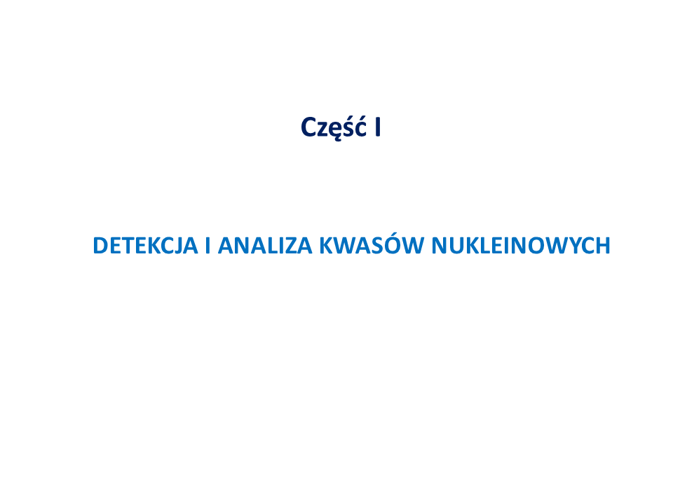
Detekcja i Analiza kwasów Nukleinowych
Część I
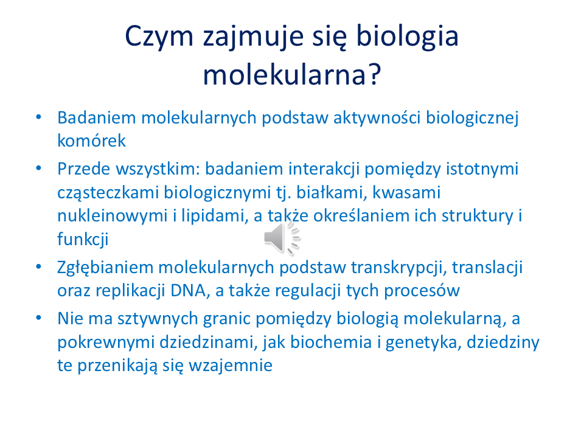
Czym zajmuje się biologia molekularna?
Badaniem molekularnych podstaw aktywności biologicznej komórek Przede wszystkim: badaniem interakcji pomiędzy istotnymi cząsteczkami biologicznymi tj. białkami, kwasami nukleinowymi i lipidami, a także określaniem ich struktury i funkcjiZgłębianiem molekularnych podstaw transkrypcji, translacji oraz replikacji DNA, a także regulacji tych procesówNie ma sztywnych granic pomiędzy biologią molekularną, a pokrewnymi dziedzinami, jak biochemia i genetyka, dziedziny te przenikają się wzajemnie
uwidocznienie materiału genetycznego w komórkach w całości lub konkretnych sekwencji w jego obrębiewykrywanie RNA w komórkachuwidocznienie lub pomiar DNA lub RNA in vitro w celu badania procesów zachodzących z ich udziałem – najczęściej detekcja następuje po rozdziale kwasów nukleinowych w żelu i zastosowania metody detekcji odpowiedniej do sposobu znakowania
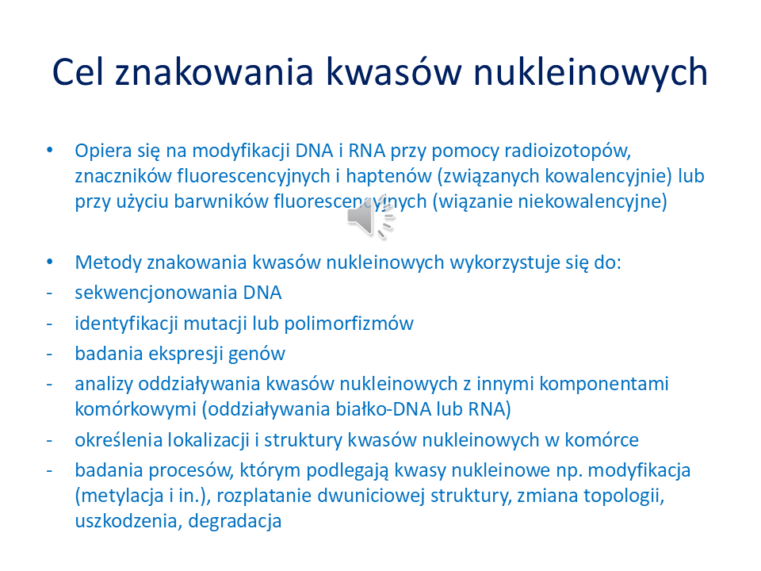
Cel znakowania kwasów nukleinowych
Opiera się na modyfikacji DNA i RNA przy pomocy radioizotopów, znaczników fluorescencyjnych i haptenów (związanych kowalencyjnie) lub przy użyciu barwników fluorescencyjnych (wiązanie niekowalencyjne)Metody znakowania kwasów nukleinowych wykorzystuje się do:sekwencjonowania DNAidentyfikacji mutacji lub polimorfizmówbadania ekspresji genówanalizy oddziaływania kwasów nukleinowych z innymi komponentami komórkowymi (oddziaływania białko-DNA lub RNA)określenia lokalizacji i struktury kwasów nukleinowych w komórcebadania procesów, którym podlegają kwasy nukleinowe np. modyfikacja (metylacja i in.), rozplatanie dwuniciowej struktury, zmiana topologii, uszkodzenia, degradacja
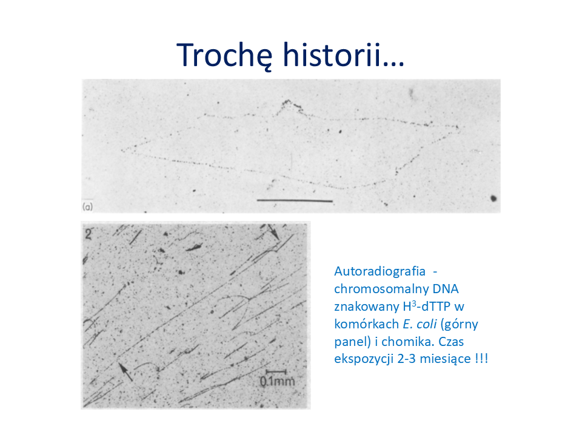
Trochę historii…
Autoradiografia -chromosomalny DNA znakowany H3-dTTP w komórkach E. coli (górny panel) i chomika. Czas ekspozycji 2-3 miesiące !!!
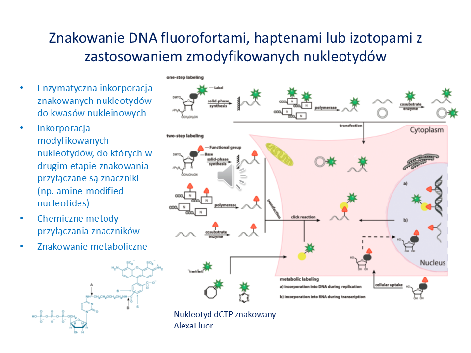
Znakowanie DNA fluorofortami, haptenami lub izotopami z zastosowaniem zmodyfikowanych nukleotydów
Enzymatyczna inkorporacja znakowanych nukleotydów do kwasów nukleinowychInkorporacja modyfikowanych nukleotydów, do których w drugim etapie znakowania przyłączane są znaczniki (np. amine-modified nucleotides)Chemiczne metody przyłączania znacznikówZnakowanie metaboliczne
Nukleotyd dCTP znakowany AlexaFluor
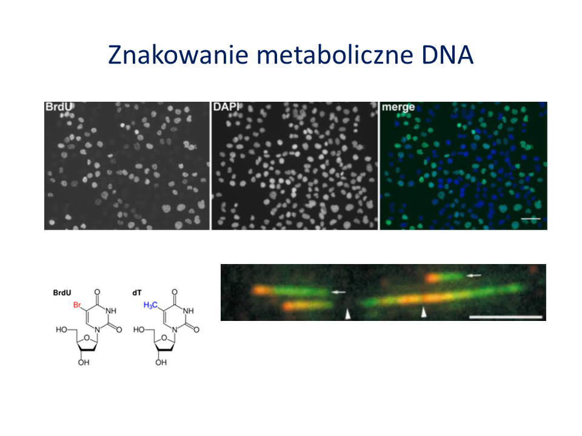
Znakowanie metaboliczne DNA
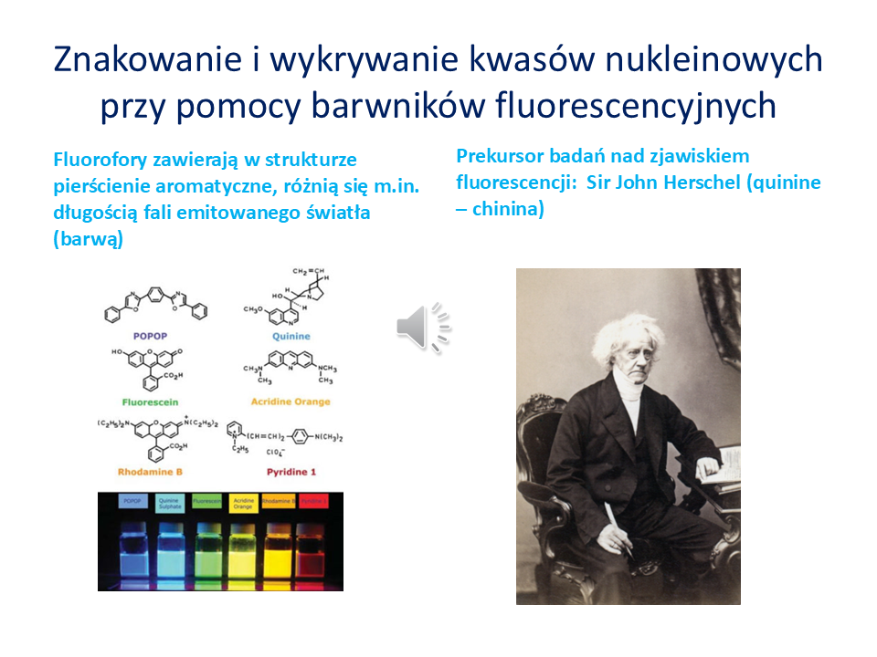
Znakowanie i wykrywanie kwasów nukleinowych przy pomocy barwników fluorescencyjnych
Fluorofory zawierają w strukturze pierścienie aromatyczne, różnią się m.in. długością fali emitowanego światła (barwą)
Prekursor badań nad zjawiskiem fluorescencji: Sir John Herschel (quinine – chinina)
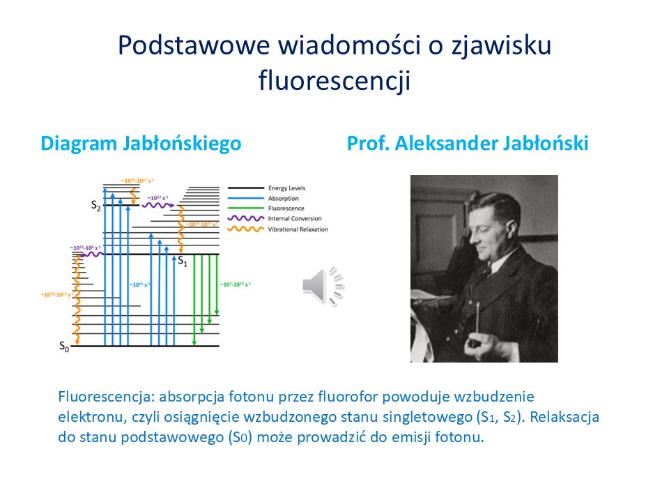
Podstawowe wiadomości o zjawisku fluorescencji
Diagram Jabłońskiego
Prof. Aleksander Jabłoński
Fluorescencja: absorpcja fotonu przez fluorofor powoduje wzbudzenie elektronu, czyli osiągnięcie wzbudzonego stanu singletowego (S1, S2). Relaksacja do stanu podstawowego (S0) może prowadzić do emisji fotonu.
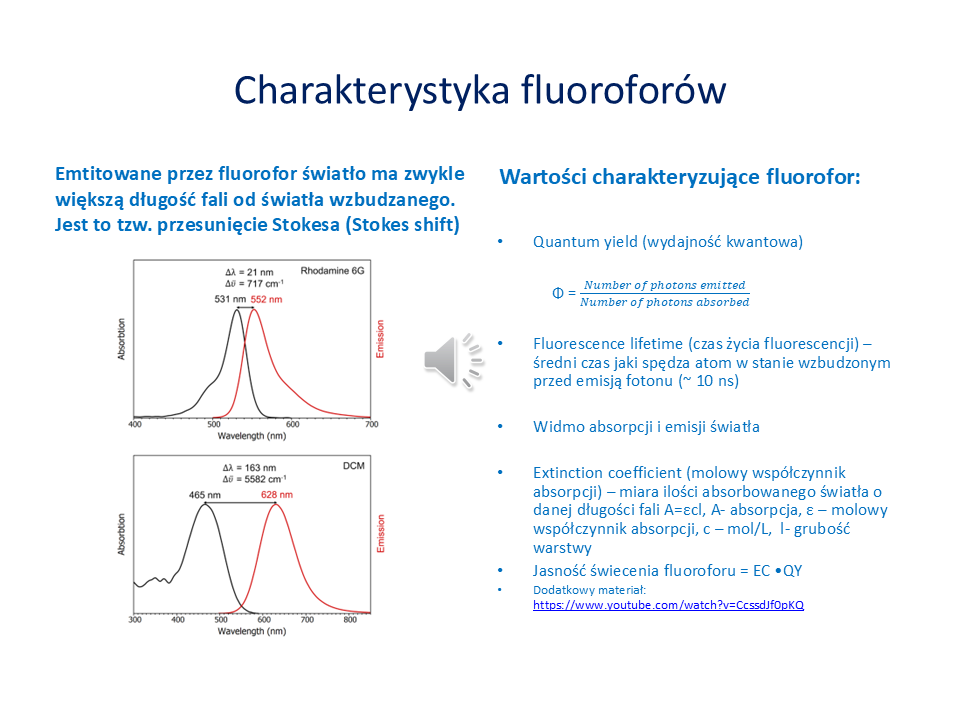
Charakterystyka fluoroforów
Emtitowane przez fluorofor światło ma zwykle większą długość fali od światła wzbudzanego. Jest to tzw. przesunięcie Stokesa (Stokes shift)
Wartości charakteryzujące fluorofor:
Quantum yield (wydajność kwantowa) Φ = 𝑁𝑢𝑚𝑏𝑒𝑟 𝑜𝑓 𝑝ℎ𝑜𝑡𝑜𝑛𝑠 𝑒𝑚𝑖𝑡𝑡𝑒𝑑 𝑁𝑢𝑚𝑏𝑒𝑟 𝑜𝑓 𝑝ℎ𝑜𝑡𝑜𝑛𝑠 𝑎𝑏𝑠𝑜𝑟𝑏𝑒𝑑 Fluorescence lifetime (czas życia fluorescencji) – średni czas jaki spędza atom w stanie wzbudzonym przed emisją fotonu (~ 10 ns)Widmo absorpcji i emisji światłaExtinction coefficient (molowy współczynnik absorpcji) – miara ilości absorbowanego światła o danej długości fali A=εcl, A- absorpcja, ε – molowy współczynnik absorpcji, c – mol/L, l- grubość warstwyJasność świecenia fluoroforu = EC •QYDodatkowy materiał: https://www.youtube.com/watch?v=CcssdJf0pKQ
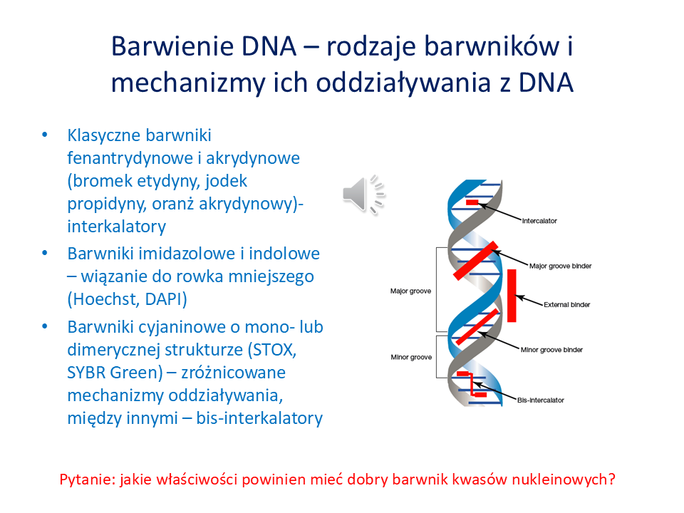
Barwienie DNA – rodzaje barwników i mechanizmy ich oddziaływania z DNA
Klasyczne barwniki fenantrydynowe i akrydynowe (bromek etydyny, jodek propidyny, oranż akrydynowy)- interkalatory Barwniki imidazolowe i indolowe – wiązanie do rowka mniejszego (Hoechst, DAPI)Barwniki cyjaninowe o mono- lub dimerycznej strukturze (STOX, SYBR Green) – zróżnicowane mechanizmy oddziaływania, między innymi – bis-interkalatory
Pytanie: jakie właściwości powinien mieć dobry barwnik kwasów nukleinowych?
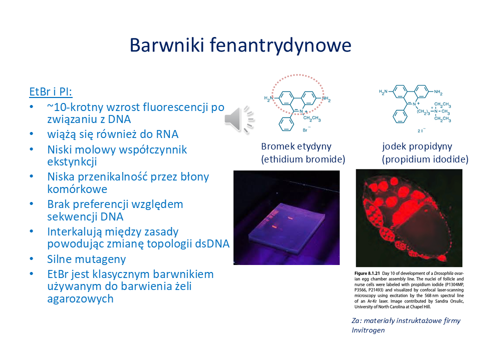
Barwniki fenantrydynowe
EtBr i PI: ~10-krotny wzrost fluorescencji po związaniu z DNA wiążą się również do RNANiski molowy współczynnik ekstynkcjiNiska przenikalność przez błony komórkoweBrak preferencji względem sekwencji DNAInterkalują między zasady powodując zmianę topologii dsDNA Silne mutagenyEtBr jest klasycznym barwnikiem używanym do barwienia żeli agarozowych
Hoechst i DAPI są wykorzystywane w bardzo wielu aplikacjach do barwienia DNA w komórkach (jąder komórkowych)Znacznie wyższe powinowactwo do DNA niż RNAPrzenikają przez błony komórkowe, DAPI – niska przenikalność, preferencyjne wiązanie do ciągów par AT
Barwienie DAPI
Indole and imidazole rings
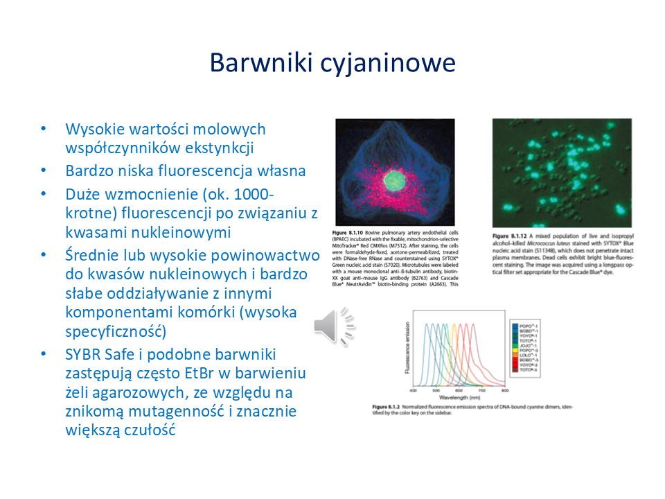
Barwniki cyjaninowe
Wysokie wartości molowych współczynników ekstynkcji Bardzo niska fluorescencja własnaDuże wzmocnienie (ok. 1000-krotne) fluorescencji po związaniu z kwasami nukleinowymiŚrednie lub wysokie powinowactwo do kwasów nukleinowych i bardzo słabe oddziaływanie z innymi komponentami komórki (wysoka specyficzność)SYBR Safe i podobne barwniki zastępują często EtBr w barwieniu żeli agarozowych, ze względu na znikomą mutagenność i znacznie większą czułość
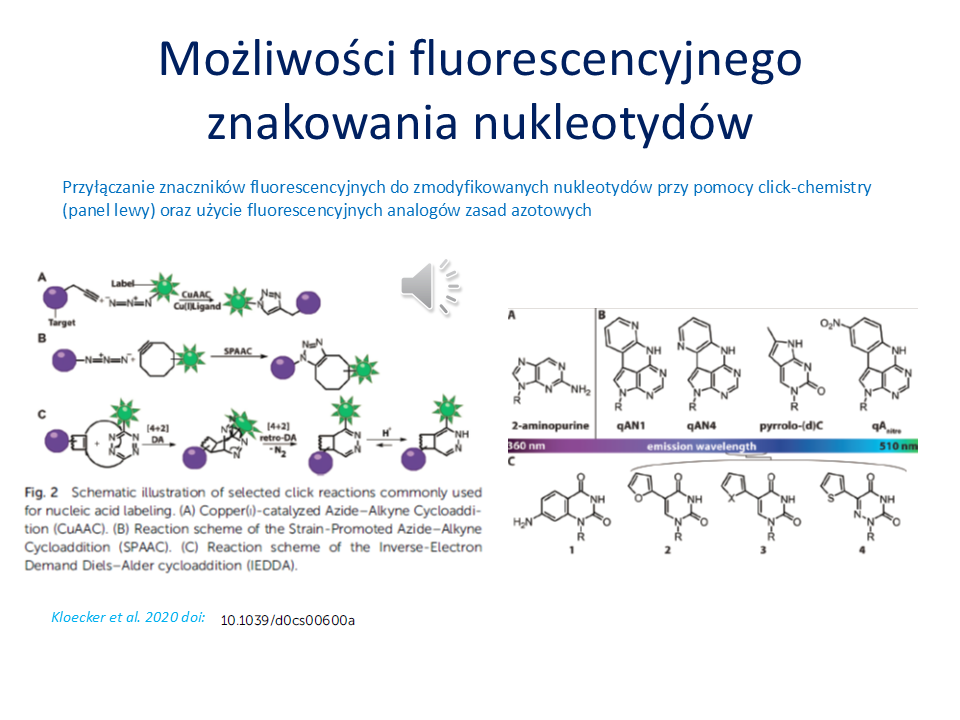
Możliwości fluorescencyjnego znakowania nukleotydów
Kloecker et al. 2020 doi:
Przyłączanie znaczników fluorescencyjnych do zmodyfikowanych nukleotydów przy pomocy click-chemistry (panel lewy) oraz użycie fluorescencyjnych analogów zasad azotowych
Aparatura służąca do detekcji i pomiaru fluorescencji
Spektrofluorymetr – pomiar fluorescencji w objętości próbySkanery – do detekcji i analizy fluorescencji w dwuwymiarowej przestrzeni (analiza żeli, chromatogramów, membran)Mikroskopy fluorescencyjneCytometry przepływoweDodatkowy materiał: https://www.youtube.com/watch?v=NoUPFxUIB0M&t=185s
Źródła światła wzbudzającego: lampy Xenonowe i rtęciowe, lampy halogenowe z żarnikiem wolframowym, diody LED, laseryMonochromatory FiltryFotopowielacze
Budowa czytnika mikropłytek
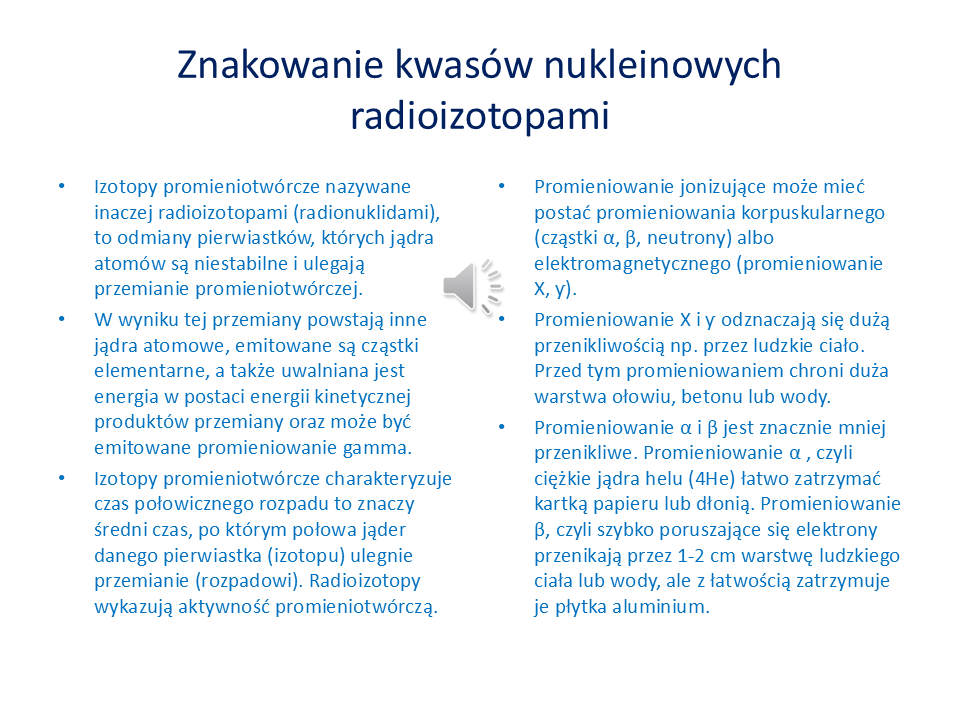
Znakowanie kwasów nukleinowych radioizotopami
Izotopy promieniotwórcze nazywane inaczej radioizotopami (radionuklidami), to odmiany pierwiastków, których jądra atomów są niestabilne i ulegają przemianie promieniotwórczej. W wyniku tej przemiany powstają inne jądra atomowe, emitowane są cząstki elementarne, a także uwalniana jest energia w postaci energii kinetycznej produktów przemiany oraz może być emitowane promieniowanie gamma. Izotopy promieniotwórcze charakteryzuje czas połowicznego rozpadu to znaczy średni czas, po którym połowa jąder danego pierwiastka (izotopu) ulegnie przemianie (rozpadowi). Radioizotopy wykazują aktywność promieniotwórczą.
Promieniowanie jonizujące może mieć postać promieniowania korpuskularnego (cząstki α, β, neutrony) albo elektromagnetycznego (promieniowanie X, ƴ). Promieniowanie X i ƴ odznaczają się dużą przenikliwością np. przez ludzkie ciało. Przed tym promieniowaniem chroni duża warstwa ołowiu, betonu lub wody. Promieniowanie α i β jest znacznie mniej przenikliwe. Promieniowanie α , czyli ciężkie jądra helu (4He) łatwo zatrzymać kartką papieru lub dłonią. Promieniowanie β, czyli szybko poruszające się elektrony przenikają przez 1-2 cm warstwę ludzkiego ciała lub wody, ale z łatwością zatrzymuje je płytka aluminium.
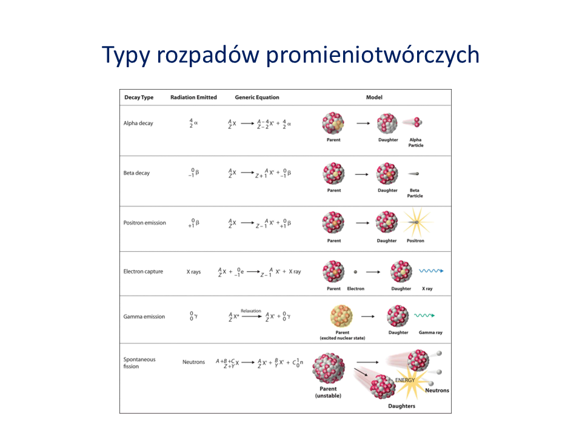
Typy rozpadów promieniotwórczych
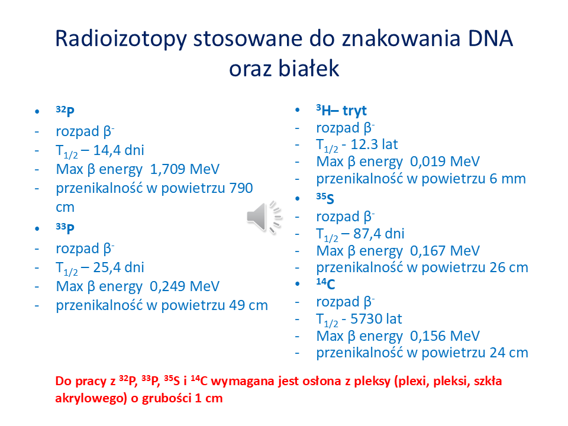
Radioizotopy stosowane do znakowania DNA oraz białek
3H– tryt rozpad β-T1/2 - 12.3 latMax β energy 0,019 MeVprzenikalność w powietrzu 6 mm35S rozpad β-T1/2 – 87,4 dniMax β energy 0,167 MeVprzenikalność w powietrzu 26 cm14Crozpad β-T1/2 - 5730 latMax β energy 0,156 MeVprzenikalność w powietrzu 24 cm
32P rozpad β-T1/2 – 14,4 dniMax β energy 1,709 MeVprzenikalność w powietrzu 790 cm33P rozpad β-T1/2 – 25,4 dniMax β energy 0,249 MeVprzenikalność w powietrzu 49 cm
Do pracy z 32P, 33P, 35S i 14C wymagana jest osłona z pleksy (plexi, pleksi, szkła akrylowego) o grubości 1 cm
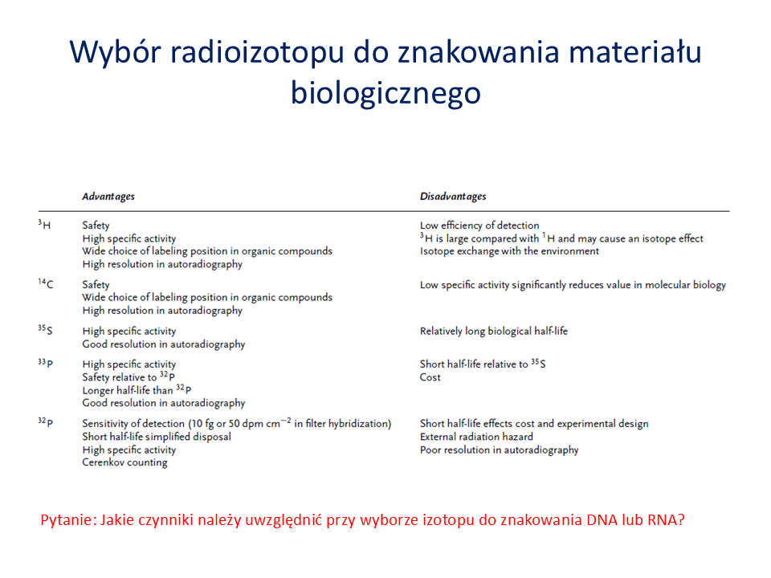
Wybór radioizotopu do znakowania materiału biologicznego
Pytanie: Jakie czynniki należy uwzględnić przy wyborze izotopu do znakowania DNA lub RNA?
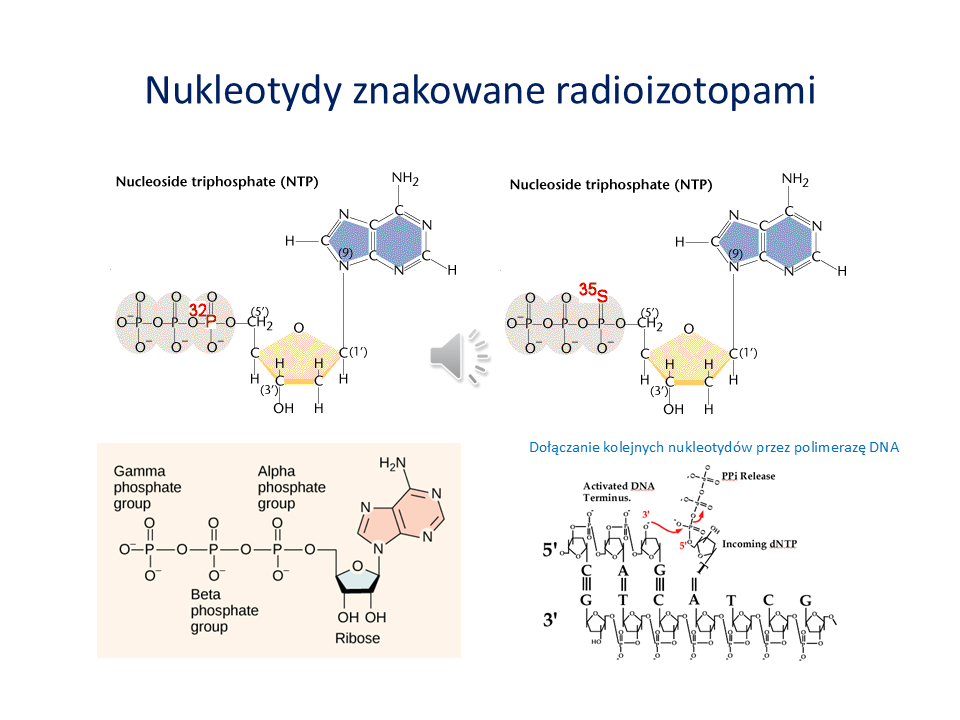
Nukleotydy znakowane radioizotopami
Dołączanie kolejnych nukleotydów przez polimerazę DNA
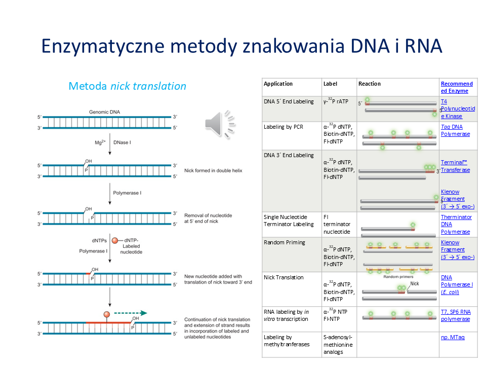
Enzymatyczne metody znakowania DNA i RNA
Metoda nick translation
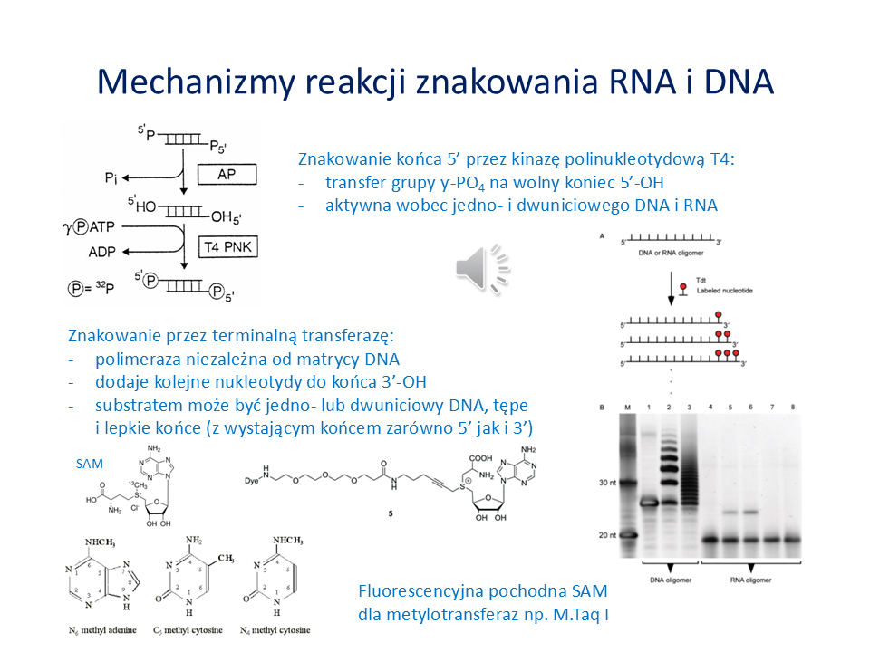
Mechanizmy reakcji znakowania RNA i DNA
Znakowanie końca 5’ przez kinazę polinukleotydową T4:transfer grupy ƴ-PO4 na wolny koniec 5’-OHaktywna wobec jedno- i dwuniciowego DNA i RNA
Znakowanie przez terminalną transferazę:polimeraza niezależna od matrycy DNAdodaje kolejne nukleotydy do końca 3’-OHsubstratem może być jedno- lub dwuniciowy DNA, tępe i lepkie końce (z wystającym końcem zarówno 5’ jak i 3’)
Fluorescencyjna pochodna SAM dla metylotransferaz np. M.Taq I
Budowa licznika scyntylacyjnegoDodatkowy materiał: https://www.youtube.com/watch?v=DNnzHQ5p0nc
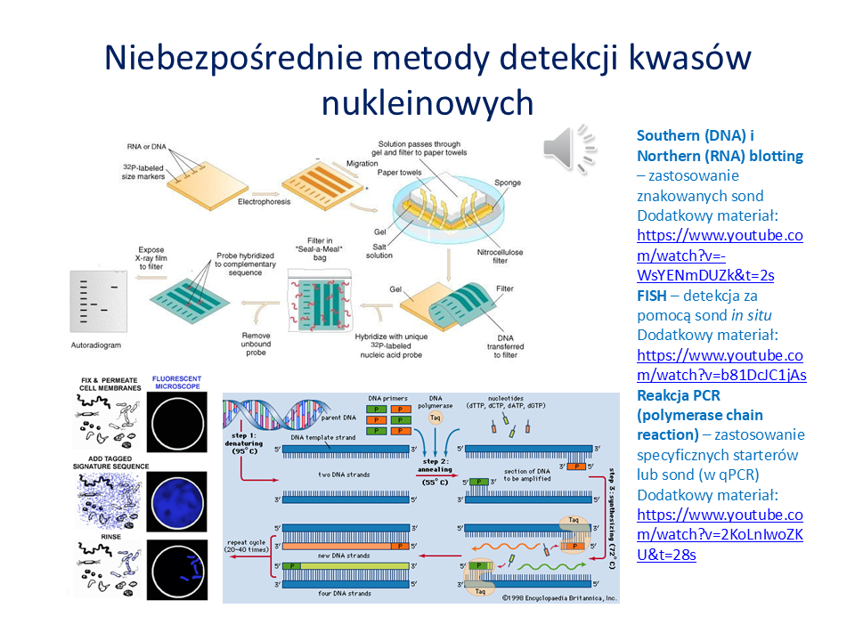
Niebezpośrednie metody detekcji kwasów nukleinowych
Southern (DNA) i Northern (RNA) blotting – zastosowanie znakowanych sondDodatkowy materiał: https://www.youtube.com/watch?v=-WsYENmDUZk&t=2sFISH – detekcja za pomocą sond in situDodatkowy materiał: https://www.youtube.com/watch?v=b81DcJC1jAsReakcja PCR (polymerase chain reaction) – zastosowanie specyficznych starterów lub sond (w qPCR)Dodatkowy materiał: https://www.youtube.com/watch?v=2KoLnIwoZKU&t=28s
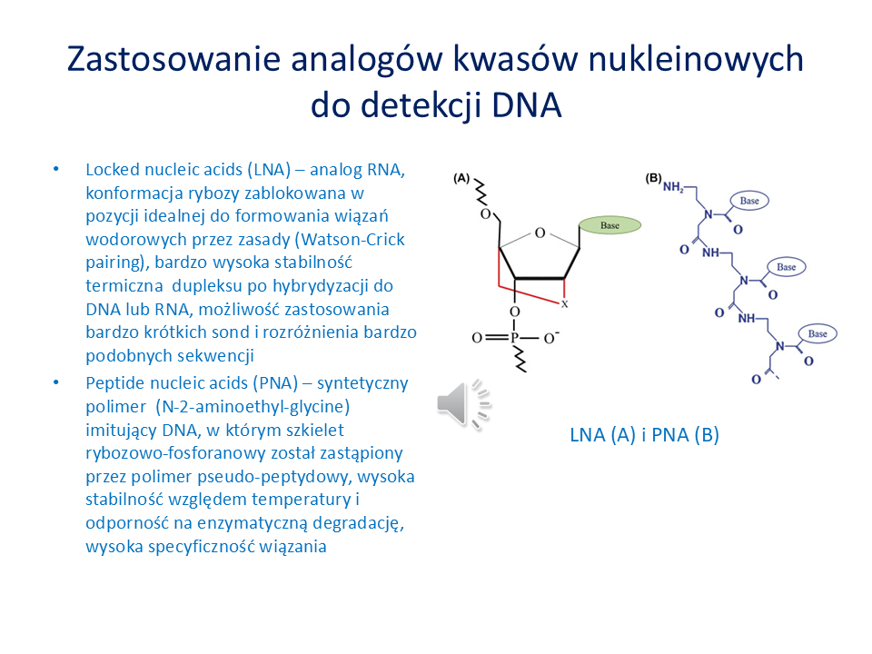
Zastosowanie analogów kwasów nukleinowych do detekcji DNA
Locked nucleic acids (LNA) – analog RNA, konformacja rybozy zablokowana w pozycji idealnej do formowania wiązań wodorowych przez zasady (Watson-Crick pairing), bardzo wysoka stabilność termiczna dupleksu po hybrydyzacji do DNA lub RNA, możliwość zastosowania bardzo krótkich sond i rozróżnienia bardzo podobnych sekwencjiPeptide nucleic acids (PNA) – syntetyczny polimer (N-2-aminoethyl-glycine) imitujący DNA, w którym szkielet rybozowo-fosforanowy został zastąpiony przez polimer pseudo-peptydowy, wysoka stabilność względem temperatury i odporność na enzymatyczną degradację, wysoka specyficzność wiązania
LNA (A) i PNA (B)
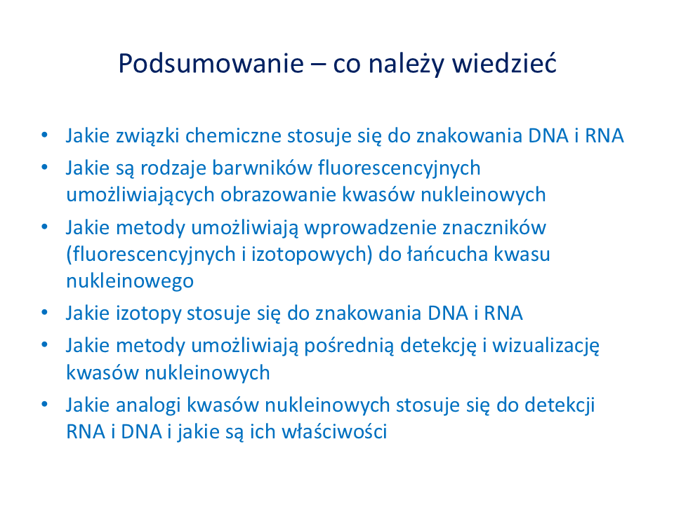
Podsumowanie – co należy wiedzieć
Jakie związki chemiczne stosuje się do znakowania DNA i RNAJakie są rodzaje barwników fluorescencyjnych umożliwiających obrazowanie kwasów nukleinowychJakie metody umożliwiają wprowadzenie znaczników (fluorescencyjnych i izotopowych) do łańcucha kwasu nukleinowegoJakie izotopy stosuje się do znakowania DNA i RNAJakie metody umożliwiają pośrednią detekcję i wizualizację kwasów nukleinowychJakie analogi kwasów nukleinowych stosuje się do detekcji RNA i DNA i jakie są ich właściwości
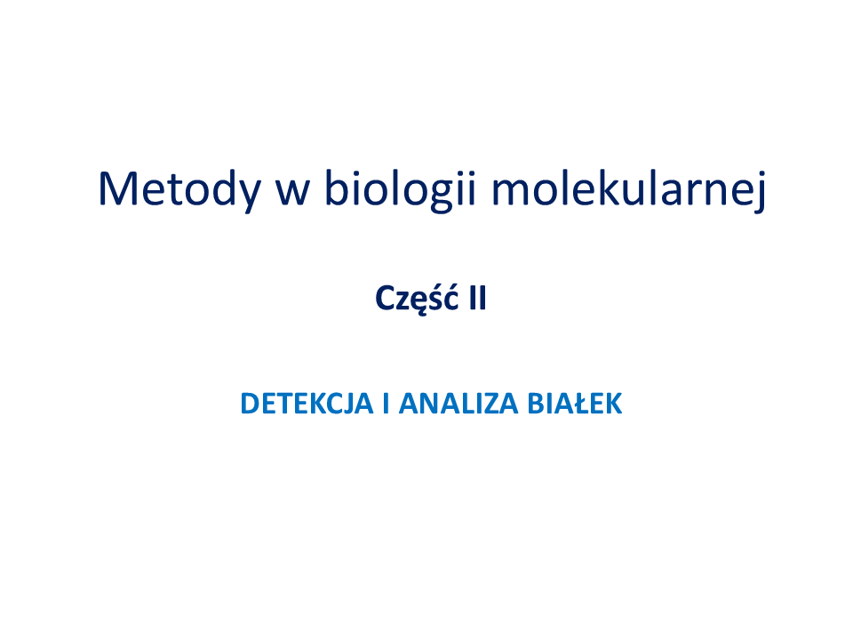
Metody w biologii molekularnej
Część IIDETEKCJA I ANALIZA BIAŁEK
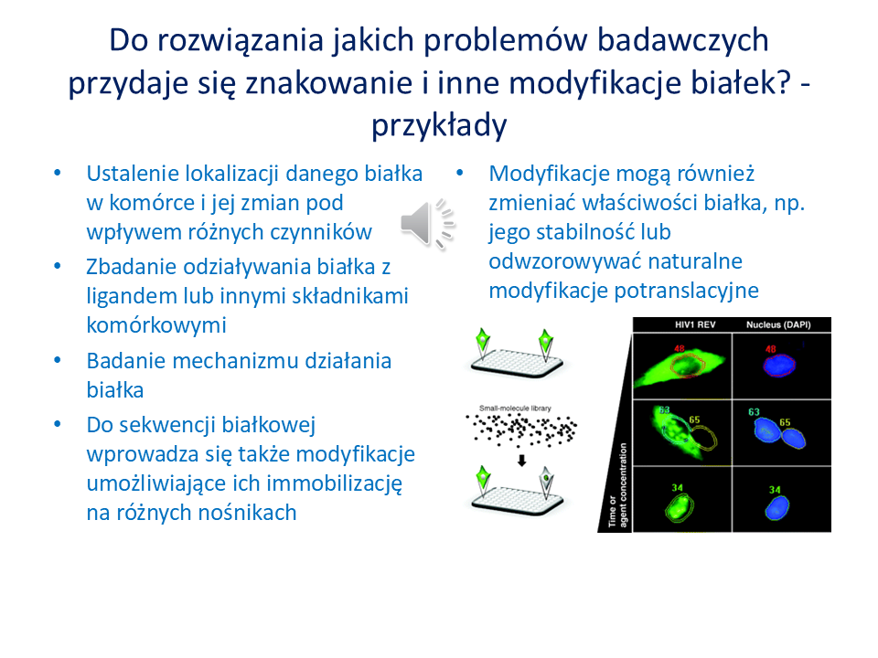
Do rozwiązania jakich problemów badawczych przydaje się znakowanie i inne modyfikacje białek? - przykłady
Ustalenie lokalizacji danego białka w komórce i jej zmian pod wpływem różnych czynnikówZbadanie odziaływania białka z ligandem lub innymi składnikami komórkowymiBadanie mechanizmu działania białkaDo sekwencji białkowej wprowadza się także modyfikacje umożliwiające ich immobilizację na różnych nośnikach
Modyfikacje mogą również zmieniać właściwości białka, np. jego stabilność lub odwzorowywać naturalne modyfikacje potranslacyjne
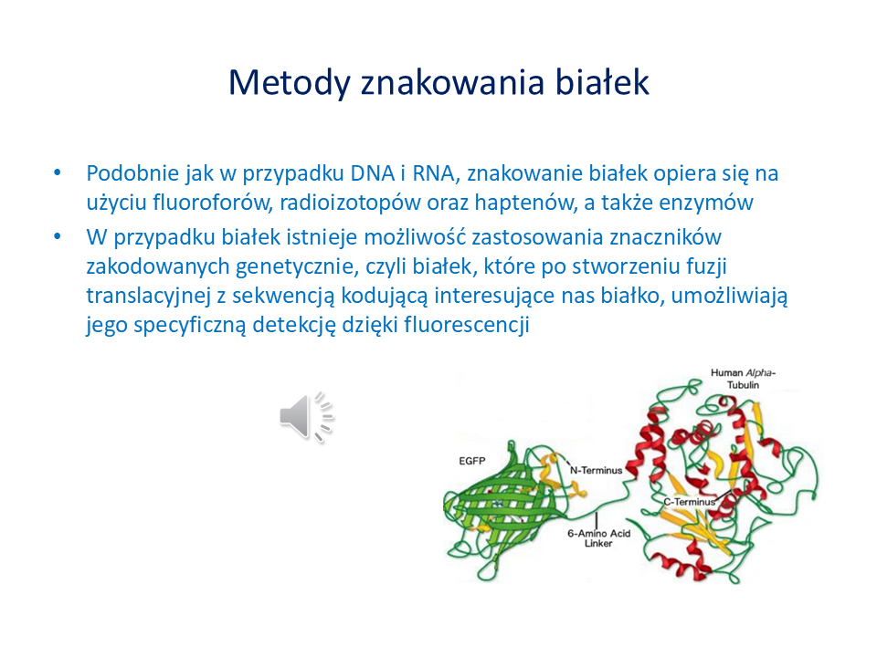
Metody znakowania białek
Podobnie jak w przypadku DNA i RNA, znakowanie białek opiera się na użyciu fluoroforów, radioizotopów oraz haptenów, a także enzymówW przypadku białek istnieje możliwość zastosowania znaczników zakodowanych genetycznie, czyli białek, które po stworzeniu fuzji translacyjnej z sekwencją kodującą interesujące nas białko, umożliwiają jego specyficzną detekcję dzięki fluorescencji
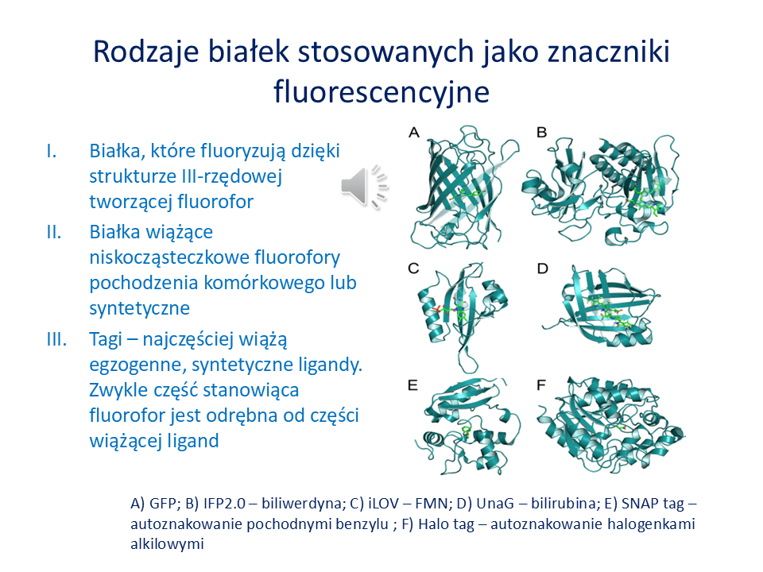
Rodzaje białek stosowanych jako znaczniki fluorescencyjne
Białka, które fluoryzują dzięki strukturze III-rzędowej tworzącej fluoroforBiałka wiążące niskocząsteczkowe fluorofory pochodzenia komórkowego lub syntetyczneTagi – najczęściej wiążą egzogenne, syntetyczne ligandy. Zwykle część stanowiąca fluorofor jest odrębna od części wiążącej ligand
A) GFP; B) IFP2.0 – biliwerdyna; C) iLOV – FMN; D) UnaG – bilirubina; E) SNAP tag – autoznakowanie pochodnymi benzylu ; F) Halo tag – autoznakowanie halogenkami alkilowymi
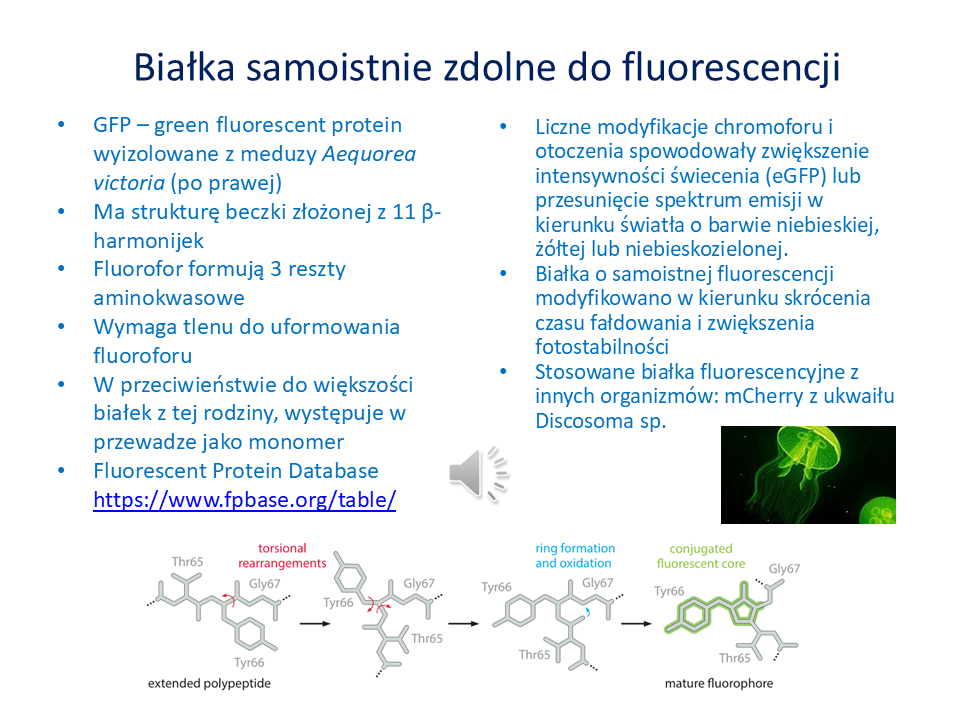
Białka samoistnie zdolne do fluorescencji
GFP – green fluorescent protein wyizolowane z meduzy Aequorea victoria (po prawej)Ma strukturę beczki złożonej z 11 β-harmonijekFluorofor formują 3 reszty aminokwasoweWymaga tlenu do uformowania fluoroforuW przeciwieństwie do większości białek z tej rodziny, występuje w przewadze jako monomerFluorescent Protein Database https://www.fpbase.org/table/
Liczne modyfikacje chromoforu i otoczenia spowodowały zwiększenie intensywności świecenia (eGFP) lub przesunięcie spektrum emisji w kierunku światła o barwie niebieskiej, żółtej lub niebieskozielonej.Białka o samoistnej fluorescencji modyfikowano w kierunku skrócenia czasu fałdowania i zwiększenia fotostabilnościStosowane białka fluorescencyjne z innych organizmów: mCherry z ukwaiłu Discosoma sp.
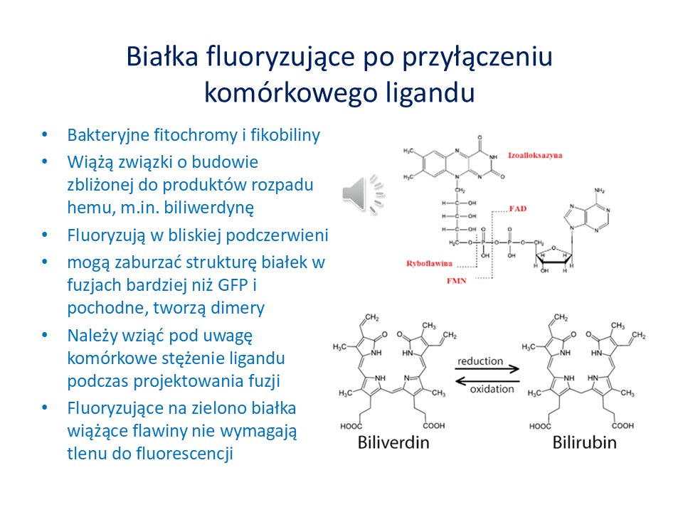
Białka fluoryzujące po przyłączeniu komórkowego ligandu
Bakteryjne fitochromy i fikobilinyWiążą związki o budowie zbliżonej do produktów rozpadu hemu, m.in. biliwerdynęFluoryzują w bliskiej podczerwienimogą zaburzać strukturę białek w fuzjach bardziej niż GFP i pochodne, tworzą dimeryNależy wziąć pod uwagę komórkowe stężenie ligandu podczas projektowania fuzjiFluoryzujące na zielono białka wiążące flawiny nie wymagają tlenu do fluorescencji
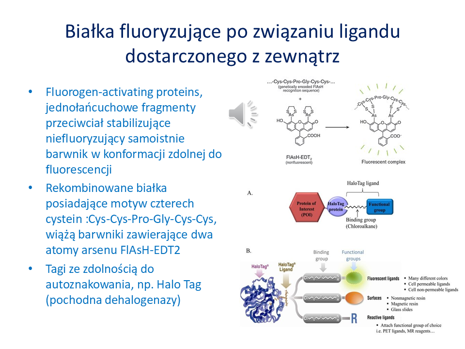
Białka fluoryzujące po związaniu ligandu dostarczonego z zewnątrz
Fluorogen-activating proteins, jednołańcuchowe fragmenty przeciwciał stabilizujące niefluoryzujący samoistnie barwnik w konformacji zdolnej do fluorescencjiRekombinowane białka posiadające motyw czterech cystein :Cys-Cys-Pro-Gly-Cys-Cys, wiążą barwniki zawierające dwa atomy arsenu FlAsH-EDT2Tagi ze zdolnością do autoznakowania, np. Halo Tag (pochodna dehalogenazy)
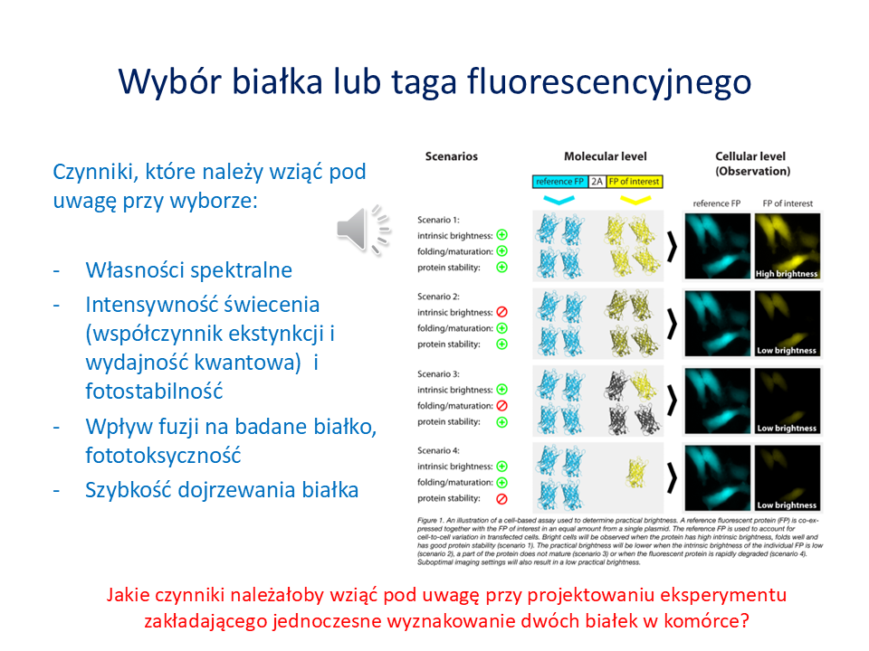
Wybór białka lub taga fluorescencyjnego
Czynniki, które należy wziąć pod uwagę przy wyborze:Własności spektralneIntensywność świecenia (współczynnik ekstynkcji i wydajność kwantowa) i fotostabilnośćWpływ fuzji na badane białko, fototoksycznośćSzybkość dojrzewania białka
Jakie czynniki należałoby wziąć pod uwagę przy projektowaniu eksperymentu zakładającego jednoczesne wyznakowanie dwóch białek w komórce?
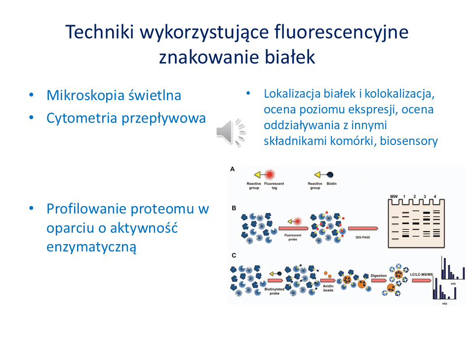
Techniki wykorzystujące fluorescencyjne znakowanie białek
Mikroskopia świetlnaCytometria przepływowaProfilowanie proteomu w oparciu o aktywność enzymatyczną
Lokalizacja białek i kolokalizacja, ocena poziomu ekspresji, ocena oddziaływania z innymi składnikami komórki, biosensory
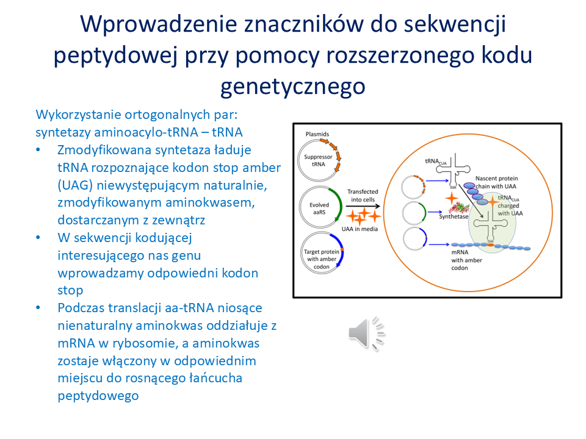
Wprowadzenie znaczników do sekwencji peptydowej przy pomocy rozszerzonego kodu genetycznego
Wykorzystanie ortogonalnych par: syntetazy aminoacylo-tRNA – tRNA Zmodyfikowana syntetaza ładuje tRNA rozpoznające kodon stop amber (UAG) niewystępującym naturalnie, zmodyfikowanym aminokwasem, dostarczanym z zewnątrzW sekwencji kodującej interesującego nas genu wprowadzamy odpowiedni kodon stopPodczas translacji aa-tRNA niosące nienaturalny aminokwas oddziałuje z mRNA w rybosomie, a aminokwas zostaje włączony w odpowiednim miejscu do rosnącego łańcucha peptydowego
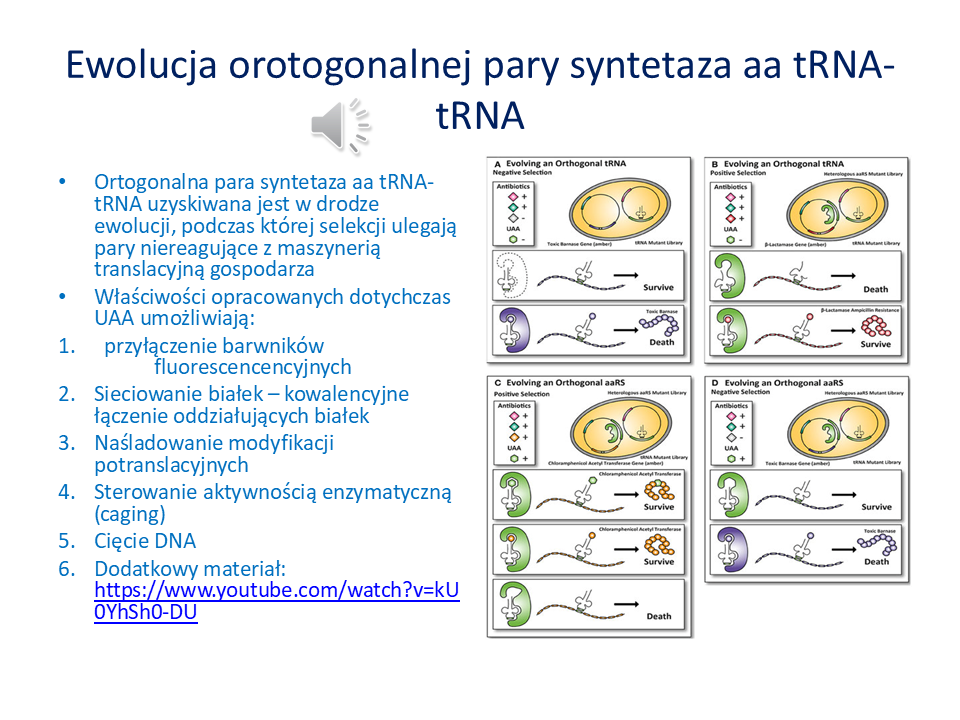
Ewolucja orotogonalnej pary syntetaza aa tRNA-tRNA
Ortogonalna para syntetaza aa tRNA-tRNA uzyskiwana jest w drodze ewolucji, podczas której selekcji ulegają pary niereagujące z maszynerią translacyjną gospodarzaWłaściwości opracowanych dotychczas UAA umożliwiają: przyłączenie barwników fluorescencencyjnych Sieciowanie białek – kowalencyjne łączenie oddziałujących białekNaśladowanie modyfikacji potranslacyjnychSterowanie aktywnością enzymatyczną (caging)Cięcie DNADodatkowy materiał: https://www.youtube.com/watch?v=kU0YhSh0-DU
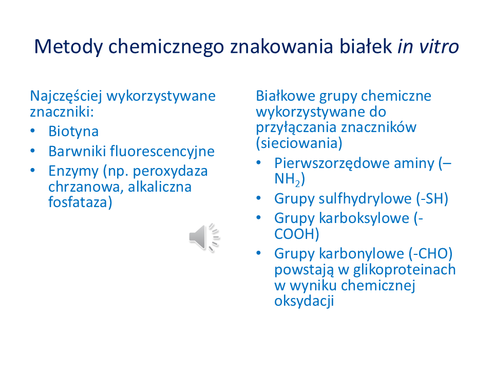
Metody chemicznego znakowania białek in vitro
Najczęściej wykorzystywane znaczniki:BiotynaBarwniki fluorescencyjneEnzymy (np. peroxydaza chrzanowa, alkaliczna fosfataza)
Białkowe grupy chemiczne wykorzystywane do przyłączania znaczników (sieciowania)Pierwszorzędowe aminy (–NH2)Grupy sulfhydrylowe (-SH)Grupy karboksylowe (-COOH)Grupy karbonylowe (-CHO) powstają w glikoproteinach w wyniku chemicznej oksydacji
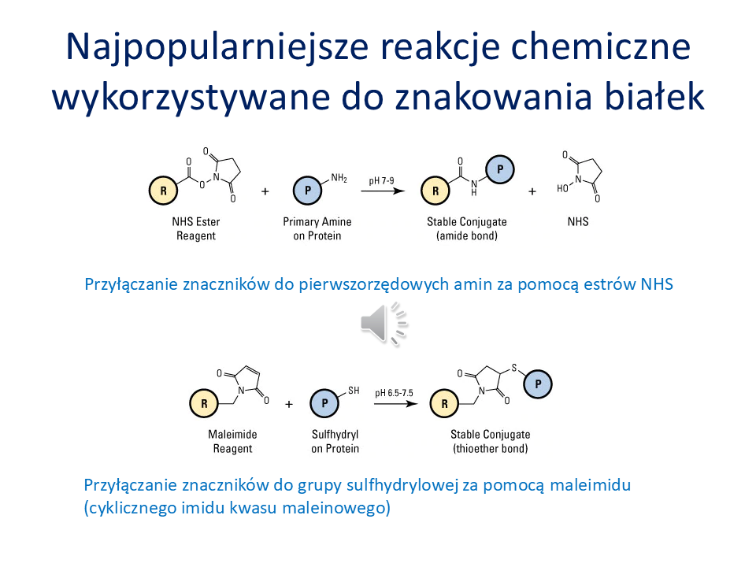
Najpopularniejsze reakcje chemiczne wykorzystywane do znakowania białek
Przyłączanie znaczników do pierwszorzędowych amin za pomocą estrów NHS
Przyłączanie znaczników do grupy sulfhydrylowej za pomocą maleimidu (cyklicznego imidu kwasu maleinowego)
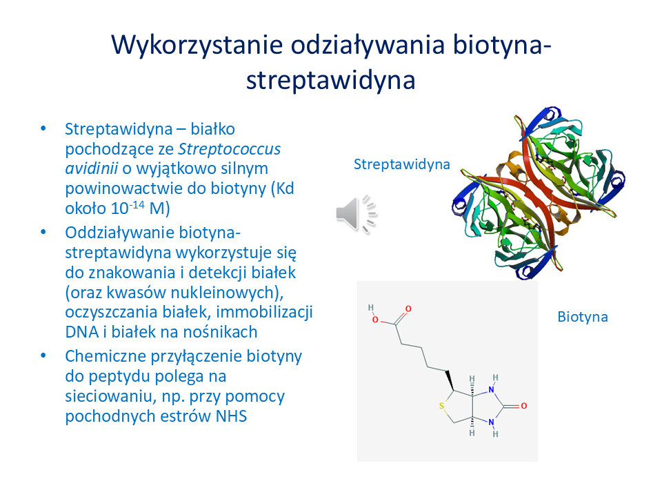
Wykorzystanie odziaływania biotyna-streptawidyna
Streptawidyna – białko pochodzące ze Streptococcus avidinii o wyjątkowo silnym powinowactwie do biotyny (Kd około 10-14 M)Oddziaływanie biotyna-streptawidyna wykorzystuje się do znakowania i detekcji białek (oraz kwasów nukleinowych), oczyszczania białek, immobilizacji DNA i białek na nośnikachChemiczne przyłączenie biotyny do peptydu polega na sieciowaniu, np. przy pomocy pochodnych estrów NHS
Streptawidyna
Biotyna
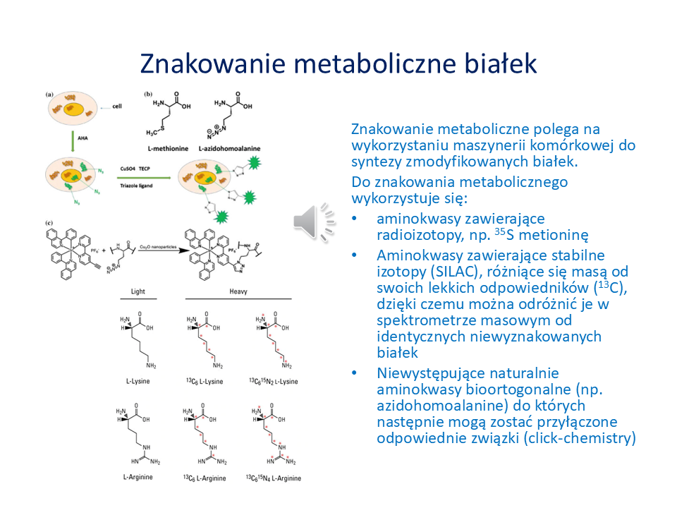
Znakowanie metaboliczne białek
Znakowanie metaboliczne polega na wykorzystaniu maszynerii komórkowej do syntezy zmodyfikowanych białek.Do znakowania metabolicznego wykorzystuje się:aminokwasy zawierające radioizotopy, np. 35S metioninęAminokwasy zawierające stabilne izotopy (SILAC), różniące się masą od swoich lekkich odpowiedników (13C), dzięki czemu można odróżnić je w spektrometrze masowym od identycznych niewyznakowanych białekNiewystępujące naturalnie aminokwasy bioortogonalne (np. azidohomoalanine) do których następnie mogą zostać przyłączone odpowiednie związki (click-chemistry)
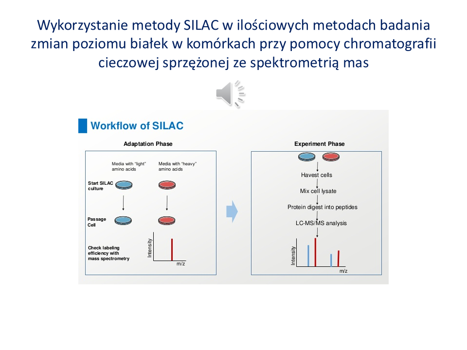
Wykorzystanie metody SILAC w ilościowych metodach badania zmian poziomu białek w komórkach przy pomocy chromatografii cieczowej sprzężonej ze spektrometrią mas
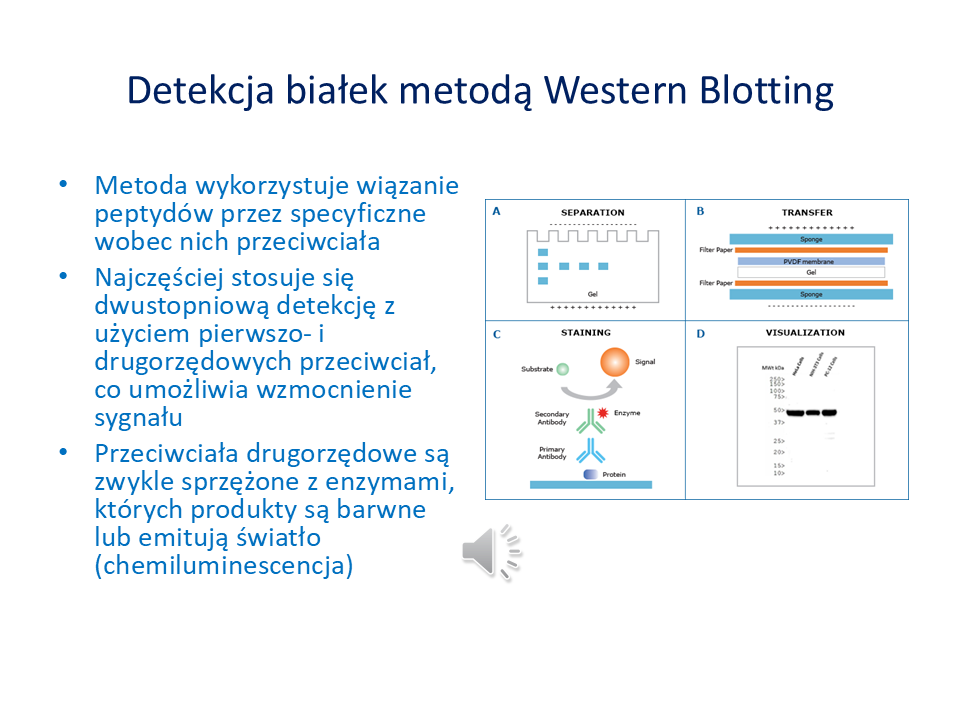
Detekcja białek metodą Western Blotting
Metoda wykorzystuje wiązanie peptydów przez specyficzne wobec nich przeciwciałaNajczęściej stosuje się dwustopniową detekcję z użyciem pierwszo- i drugorzędowych przeciwciał, co umożliwia wzmocnienie sygnałuPrzeciwciała drugorzędowe są zwykle sprzężone z enzymami, których produkty są barwne lub emitują światło (chemiluminescencja)
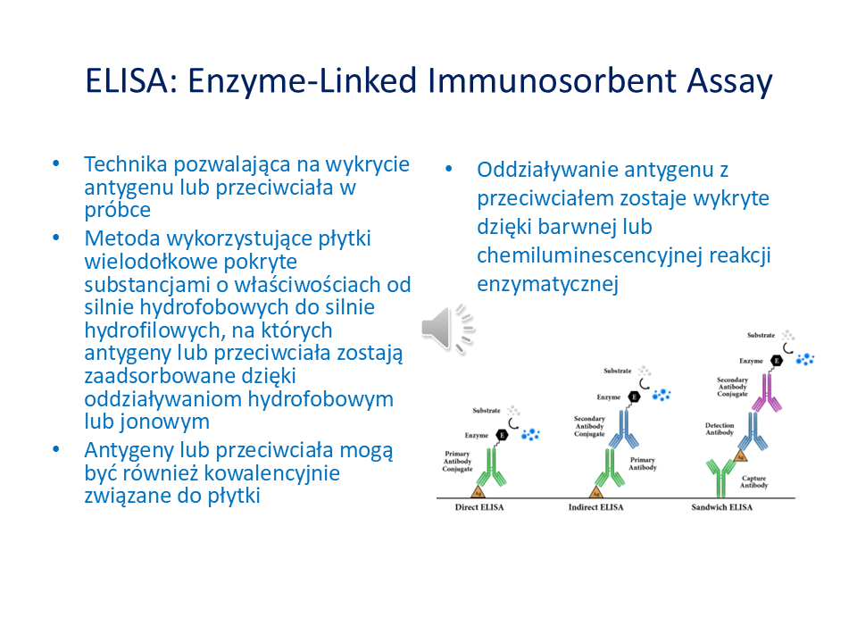
ELISA: Enzyme-Linked Immunosorbent Assay
Technika pozwalająca na wykrycie antygenu lub przeciwciała w próbceMetoda wykorzystujące płytki wielodołkowe pokryte substancjami o właściwościach od silnie hydrofobowych do silnie hydrofilowych, na których antygeny lub przeciwciała zostają zaadsorbowane dzięki oddziaływaniom hydrofobowym lub jonowymAntygeny lub przeciwciała mogą być również kowalencyjnie związane do płytki
Oddziaływanie antygenu z przeciwciałem zostaje wykryte dzięki barwnej lub chemiluminescencyjnej reakcji enzymatycznej
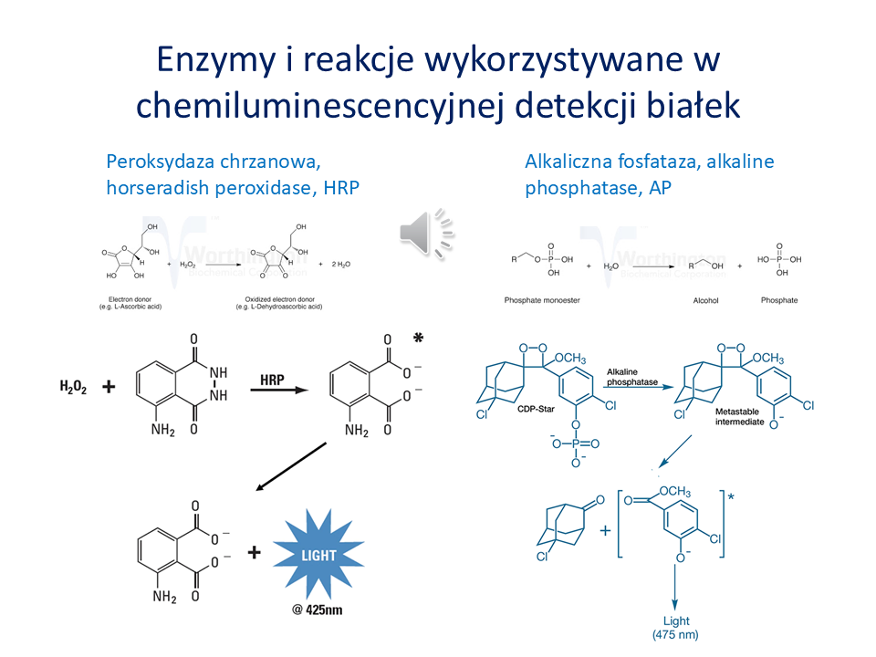
Enzymy i reakcje wykorzystywane w chemiluminescencyjnej detekcji białek
Część IIIMetody badania oddziaływań białko-DNA in vitro
Po co badać oddziaływania białko-DNA?
Kluczowe procesy życiowe, takie jak transkrypcja, replikacja DNA, rekombinacja DNA, segregacja chromosomów, modyfikacja DNA i jego upakowanie w komórce są wykonywane przez białka wiążące się do DNA
Znajomość reguł rządzących oddziaływaniami białko-DNA może pozwolić na:projektowanie leków np. hamujących lub wzmacniających interakcje DNA-białkoprojektowanie układów genetycznych do wykonania określonych funkcji o znaczeniu medycznym lub biotechnologicznymwykorzystanie białek wiążących DNA jako narzędzi w biotechnologii
Gao et al. 2019; doi: 10.1016/j.tim.2019.07.005
Parametry opisujące oddziaływanie DNA-białko
Rozpoznawana sekwencja DNAParametry kinetyczne, m.in. stała dysocjacji KdOn/off rateKooperatywność wiązaniaTopologia DNA w kompleksie
Różne sposoby oddziaływania białek z DNA
Znaczenie stałej dysocjacji Kd
Test opóźnienia migracji DNA w żelu – EMSA (Electrophoretic Mobility Shift Assay)
Prosta i czuła metoda do badania interakcji DNA-białkoZasada działania: niezwiązany DNA migruje przez pory żelu szybciej niż kompleks DNA-białko. Związanie białka do DNA obserwujemy jako przesunięcie prążka DNA w kierunku cząsteczek o większej masieMożna go użyć do identyfikacji białek wiążących DNA z ekstraktu.
Podstawowe kroki w procedurze EMSA
Oczyszczenie białka lub przygotowanie lizatu komórkowegoPrzygotowanie znakowanego DNAPrzeprowadzenie reakcji wiązania Elektroforeza w warunkach natywnychDetekcja
Wariant EMSA: supershift, wykorzystanie przeciwciał do identyfikacji białka
Istotne czynniki w procedurze EMSA
Odpowiedni skład buforu w reakcji wiązania i buforu do elektroforezy (jony dwuwartościowe, czynniki stabilizujące np. glicerol)Skład żelu (procentowe stężenie akrylamidu lub agarozy, stosunek akrylamidu:bis)Obecność niespecyficznego kompetytora (np. poly dI-dC)Dobór odpowiedniej metody znakowania i detekcji DNAStosunek białka do DNA
troubleshooting?
poly dI-dC
Obliczanie stałej dysocjacji Kd na podstawie EMSA
Kd – stężenie białka przy którym 50% DNA jest związaneJest to stała reakcji w równowadze, czyli może być policzona dla reakcji w których formowanie kompleksów zachodziło przez dłuższy czas
Procedura:Stałe stężenie DNA, miareczkowanie nadmiarem białkaRozdział wolnego DNA i kompleksów w żeluPomiar densytometryczny prążków, wyznaczenie Kd przy 50% wolnego DNA
Analiza sekwencji wiążącej białko metodą footprinting DNazą I
DNaza I – endonukleaza, trawi ssDNA i dsDNA i hybrydy DNA-RNA, hydrolizuje wiązania fosfodiestrowe, w biologii molekularnej wykorzystuje się rekombinowaną DNazę I z trzustki bydlęcej,Zasada działania: związanie białka do DNA chroni DNA w obrębie sekwencji wiążącej przed strawieniem przez DNazęPorównanie wzoru powstałego po trawieniu kompleksu DNA-białko ze wzorem uzyskanym po trawieniu wolnego DNA i z produktami reakcji sekwencjonowania DNA, pozwala na ustalenie miejsca wiązania białka
DNazaI wymaga do działania jonów Ca2+. Jony Mg2+ aktywują DNazę i powodują, że tnie obie nici niezależnie
Wykonanie eksperymentu footprinting DNazą I
Oczyszczenie badanego białkaWyznakowanie DNAWykonanie sekwencjonowania DNA badanego DNAWykonanie miareczkowania DNazą I w obecności stałej ilości DNA w celu dobrania właściwego stężenia DNazy – nie może jej być zbyt dużo! Statystycznie cięcie ma zachodzić raz na cząsteczkę DNAInkubacja DNA z badanym białkiemTrawienie DNazą I i oczyszczenie fragmentów DNARozdział DNA w denaturującym żelu poliakrylamidowym (w obecności 7M mocznika), detekcja
Footprinting DNazą I rejonu promotora pR faga λ w obecności białek CI i OxyR
Footprinting DMS (dimethyl sulphate)
Zasada działania: DMS footprinting polega na metylacji zasad, przede wszystkim guaniny (N7) i w znacznie mniejszym stopniu adeniny (N3). Wiązanie białka może chronić przed metylacją lub ją wzmacniać.Łańcuchy DNA są następnie poddawane reakcjom powodującym pęknięcie w miejscach występowania metylowanych nukleotydówMiejsca zerwania łańcucha odczytuje się najczęściej w reakcji wydłużania startera (primer extesion)
Mechanizm działania i wynik doświadczenia DMS footprinting
Metylacja, depurynacja, a następnie zerwanie łańcucha DNA pod wpływem piperydyny
Footprinting za pomocą rodników hydroksylowych
Oparty na reakcji FentonaRodniki hydroksylowe są niezwykle reaktywne i niewrażliwe na sekwencję DNA i warunki reakcji. Powodują pęknięcia łańcucha DNAZwiązanie białka chroni DNA przed uszkodzeniami spowodowanymi przez wolne rodnikiMały rozmiar cząsteczki rodnika zapewnia bardzo wysoką rozdzielczość (1 nukleotyd). Umożliwia to ocenę całkowitego rozmiaru sekwencji DNA oddziałującej z białkiem i sposobu oddziaływania białka
BABE – p-Bromoacetamidobenzylo-EDTA, chelat Fe(III) Bromoacetamid reaguje z grupą sulfhydrylową SH cysteinyBiałka zawierające pojedynczą cysteinę (w naturalnej pozycji lub wprowadzoną za pomocą mutagenezy) poddaje się reakcji przyłączenia FeBABEW obecności kwasu askorbinowego i H2O2 zachodzi reakcja FentonaOdczynnik wykorzystuje się do badania odziaływań białko-kwasy nukleinowe, ale także białko-białko i struktury 3D białek jako miejscowo-specyficzną nukleazę lub proteazęTechnikę wykorzystano np. do określenia struktury kompleksu polimerazy RNA, oksydazy cytochromu bd, odziaływania histonów z DNA
Oddziaływanie podjednostki α RNAP z E. coli z promotorem CII faga λ. Dr B. Kędzierska, KGMB
Fe2+ (EDTA4-)+ H2O2 Fe3+(EDTA4-) + OH•
Miejscowo-specyficzne fotosieciowanie w badaniach odziaływań kompleksów białkowych z DNA lub RNA
Zasada działania: włączenie fotoaktywowanego czynnika sieciującego w określonym miejscu DNA lub RNA przy pomocy zmodyfikowanego, znakowanego izotopowo starteraCzynnikiem sieciującym są np. halogenowe pochodne azydku fenyluSieciowanie oddziałujących białek z DNA przy pomocy UV
Na jakie pytania możemy odpowiedzieć badając wiązanie białek do DNA? - przykłady
Które geny są regulowane przez dany czynnik transkrypcyjny (TF)?Jaki jest mechanizm regulacji transkrypcji przez dany TF?Jakie czynniki wpływają na funkcję danego TF?Jakie są najważniejsze cechy sekwencji DNA rozpoznawanej przez dane białko?
Jaki jest mechanizm oddziaływania danego białka na DNA? np. powodujący jego rozplatanie, zginanieJaki wpływ mają substancje o potencjale terapeutycznym na oddziaływanie z DNA białek istotnych w danym procesie chorobowym?
Metody w biologii molekularnej
Część IVMetody badania oddziaływań białko-DNA in vivo
Pytania w badaniach białko-DNA in vivo
Czy badane białko oddziałuje z określoną sekwencją DNA in vivo?Z jakimi sekwencjami oddziałuje badane białko in vivo?Które białka oddziałują z badanym rejonem DNA?Jak określone zmiany warunków wpływają na oddziaływanie białek z DNA w komórce?
Immunoprecypitacja chromatyny
Zasada działania: kompleksy badanego białka z chromosomalnym DNA zostają wyizolowane za pomocą przeciwciał specyficznych wobec tego białka, związanych ze złożem Najczęściej oddziaływania białko-DNA zostają utrwalone na początkowych etapach procedury w wyniku sieciowania, zwykle za pomocą formaldehyduSekwencje DNA związane z badanym białkiem mogą zostać zidentyfikowane za pomocą różnych metod: PCR, mikromacierzy (ChIP on Chip), sekwencjonowania nowej generacji (ChIP-seq)
Procedura ChIP
Sieciowanie DNA-białko
Sieciowanie zapewnia możliwość uchwycenia słabszych i przejściowych oddziaływań. Dzięki sieciowaniu otrzymujemy migawkę z oddziaływań białko-DNA istniejących w badanych komórkach w danym czasie.
Protein-Protein
DNA-DNA
Liza komórki i fragmentacja DNA
Kompleksy DNA-białko zostają uwolnione z komórki w wyniku zniszczenia błon komórkowych przy pomocy detergentu np. (NP40, TX100, Tween and/or SDS. Efektywność lizy można sprawdzić pod mikroskopemFragmentacja DNA przy pomocy ultradźwięków lub enzymów na krótkie odcinki 200-700 bp. Rezultaty można sprawdzić wykonując elektroforezę agarozowąDodatkowy materiał:https://www.youtube.com/watch?v=U-uUYCFDTrchttps://www.youtube.com/watch?v=0-WEFpmLTrc&feature=youtu.be
Immunoprecypitacja, odwrócenie sieciowania i oczyszczenie DNA
Fragmenty DNA związane z interesującym nas białkiem zostają wyizolowane przy pomocy przeciwciał specyficznych wobec badanego białka. Kompleksy DNA-białko-przeciwciała zostają oczyszczone na złożach zawierających czynniki wiążące przeciwciała np. białko A lub białko G.Przeciwciała stosowane w ChIP muszą być bardzo efektywne i specyficzne. Nie wszystkie przeciwciała działają, gdyż rozpoznawany epitop może być blokowany w wyniku sieciowania. Należy używać przeciwciał walidowanych.Odwrócenie sieciowania następuje poprzez inkubację w roztworze NaHCO3 w temp. 65 °C przez kilka godzin. Pomocne może być użycie proteinazy K i RNazy w celu usunięcia białek i RNA. DNA zostaje następnie oczyszczony.
Informacje uzyskane z eksperymentu ChIP zależą od metody użytej do identyfikacji sekwencji DNA związanych z badanym białkiem:PCR lub qPCR ze specyficznymi starterami do wybranej sekwencji – czy dana sekwencja wiąże się z badanym białkiem w określonych warunkach i z jaką wydajnościąMikromacierze i NGS – określenie globalnego oddziaływania badanego białka z różnymi rejonami chromosomu
Przygotowanie biblioteki fragmentów DNA do sekwencjonowania
Procedura:Naprawa końców DNA Dołączenie dA na końcach 3’Ligacja adaptorów o strukturze szpilki do włosówLinearyzacja adaptorówPowielenie biblioteki DNA przy pomocy PCR z zastosowaniem starterów komplementarnych do adaptorów
Technika oparta na hybrydyzacji komplementarnych fragmentów DNAZnakowany fluorescencyjnie DNA zawarty w badanej próbie podlega hybrydyzacji z sondami znajdującymi się na mikromacierzy (chipie)Macierze podzielone są na sektory, w każdym sektorze znajduje się powtórzona wielokrotnie, unikalna sekwencja DNA reprezentująca np. gen. Pozycja danej sekwencji na macierzy jest znana i na tej podstawie można ustalić jakie sekwencje DNA hybrydyzowały z sondami
Przykład zastosowania techniki ChIP
Ekspresja genów eukariotycznych jest regulowana poprzez strukturę chromatynyStruktura chromatyny jest determinowana przez oddziaływanie chromosomalnego DNA z histonamiModyfikacje potranslacyjne histonów są ważnymi epigenetycznymi mechanizmami regulacji struktury chromatyny i ekspresji genówOkreślenie oddziaływania zmodyfikowanych histonów z DNA chromosomalnym pozwala na badanie związków pomiędzy modyfikacjami histonów a ekspresją genów
Wysokoprzepustowe testy ChIP do badania embrionalnych komórek macierzystych (ESC)
Zmiany epigenetyczne towarzyszą różnym chorobom, są obecne m.in. w nowotworach i chorobach autoimmunologicznych Obecnie dostępnych jest kilka leków, których celem są mechanizmy epigenetyczne i trwają prace nad nowymi Komórki macierzyste różnią się drastycznie od zróżnicowanych pod względem epigenetycznymSterowanie mechanizmami epigenetycznymi może umożliwić manipulowanie kierunkiem różnicowania komórek macierzystychWysokoprzepustowe testy ChIP pozwalają na testowanie związków wpływających na epigenetyczną regulację
Markery epigene-tyczne
Poszukiwanie białek wiążących się do określonej sekwencji DNA
Proteomiczne badanie określonego fragmentu chromosomalnego DNA - zasada działania:Podobnie jak w przypadku ChIP, metoda wykorzystuje sieciowanie białek do DNA przy pomocy formaldehyduInteresujący nas fragment DNA zostaje wychwycony z lizatu komórkowego przez komplementarną sondę związaną ze złożemBiałka zostają wymyte ze złoża po odwróceniu sieciowania i poddane identyfikacji przy pomocy MS
Techniki footprinting połączone z NGS mogą być stosowane do badania oddziaływań białko-DNA w skali całego genomu in vivo
DNaseI-seq wykorzystuje technikę footprinting DNazą I do mapowania rejonów regulatorowych transkrypcji w chromosomach eukariotycznychRejony te są wolne od nukleosomów i bardziej wrażliwe na działanie DNazy I (DHS)W ten sposób można zbadać jak zmienia się zaangażowanie obecnych w genomie sekwencji regulatorowych w zależności od warunków, obecności mutacji, etapu rozwoju embrionalnego itp.
DMS footprinting połączony z NGS jest stosowane do badania oddziaływań białko-DNA oraz stw skali całego genomu in vivo
Metody w biologii molekularnej
Część VMetody badania topologii DNA i konformacji chromosomów in vivo
Struktura DNA i jego biofizyczne właściwości
DNA obecny w komórkach jest bardzo długim i dość sztywnym polimerem.Dwuniciowa struktura DNA musi ulec rozpleceniu, aby umożliwić odczyt lub skopiowanie informacji zawartej w genomowym DNA.Upakowanie DNA w komórce musi umożliwić przebieg procesów odbywających się z jego udziałem tj. replikacji i transkrypcji.Enzymy przeprowadzające procesy replikacji i transkrypcji (polimerazy DNA i RNA) generują superskręty DNA.Pozytywne superskręty to dodatkowa liczba opleceń nici DNA w kierunku zgodnym z jej naturalnym skrętem (overtwisting).Negatywne superskręty mają kierunek przeciwny do naturalnego skrętu helisy (undertwisting).
James Watson i Francis Crick
Liu & Wang, 1987; twin domain model
Struktura chromosomu bakteryjnego jest regulowana poprzez oddziaływanie z białkami
Długość chromosomu bakteryjnego przekracza rozmiar komórki ok. 1000-krotnie.Chromosom bakteryjny jako całość jest negatywnie superskręcony.Za utrzymanie właściwej struktury chromosomu, czyli m.in. usuwanie superskrętów generowanych przez polimerazy odpowiedzialne są topoizomerazy, przede wszystkim topizomeraza I i gyraza.Za upakowanie chromosomu odpowiedzialne są m.in. białka należące do grupy Nucleoid Associated Proteins (NAPS). Należy do nich H-NS, Ihf, Fis, HU, Dps, StpA.Białka NAPs w zróżnicowany sposób wpływają na architekturę DNA, wprowadzając zagięcia, pętle lub mostki w DNA. Równocześnie, wprowadzane zmiany w strukturze DNA maja wpływ na aktywność promotorów. Pełnią one funkcję globalnych czynników transkrypcyjnych (c, d, e)
c
d
e
Struktura chromosomu bakteryjnego podlega zmianom zależnym od warunków środowiska
Warunki środowiska wpływają m.in. na stosunek ATP/ADP w komórce, od którego zależy aktywność gyrazy.Ponadto, w zależności od warunków zmienia się skład NAPS w komórce, a także zestaw czynników sigma, oddziałujących z polimerazą RNA podczas inicjacji transkrypcji.Polimeraza RNA związana z różnymi czynnikami sigma ma zróżnicowane preferencje względem poziomu superskręcenia DNAWpływ topologii DNA na aktywność poszczególnych promotorów jest zróżnicowany i zależny m.in. od ich sekwencji
Wielopoziomowa organizacja chromosomalnego DNA w komórkach eukariotycznych
Poszczególne chromosomy zajmują określone przestrzenie w jądrze komórkowym, tzw. terytoria (a)Odziaływania różnych rejonów DNA zachodzą przede wszystkim w obrębie jednego chromosomu i powstają w wyniku oddziaływania DNA z białkamiW strukturze interfazowych chromosomów występują kompartmenty o zróżnicowanej aktywności transkrypcyjnej (aktywne – A lub nieaktywne - B) korelującej z ilością tworzonych kontaktów (b)Genom jest podzielony na domeny tzw. Topologically Asociating Domains (TADs), w których kształtowaniu główną rolę odgrywają białka CTFC (CCCTC-binding Factor) i kohezyna. Domeny zapewniają kontakt pomiędzy promotorami i właściwymi elementami regulatorowymi oraz izolują od wpływu innych (c)Kluczowe dla regulacji transkrypcji są kontakty pomiędzy wzmacniaczami transkrypcji (enhancer) i promotorami, zachodzące dzięki tworzeniu pętli DNA (d)
Poziom superskręcenia DNA wpływa na kształtowanie chromosomalnych domen
Podstawę struktury eukariotycznego chromosomu stanowi oddziaływanie DNA z histonami.Superskręcenie powoduje rotację włókien chromatyny i transmisję superskrętów do sąsiednich rejonówPonieważ superskręty powstają w procesie transkrypcji, transkrypcja jednego genu wpływa na strukturę chromatyny genów sąsiadującychPoziom superskręcenia DNA wpływa na jego odziaływanie z histonami. Pozytywne superskęty powodują destabilizację nukleosomów , zwiększając ich wymianę, zaś negatywne stabilizują wiązanie histonów
Dlaczego struktura chromosomów jest istotna?
Architektura DNA ma istotny wpływ na regulację ekspresji genów:Wpływa na przestrzenną organizację elementów genetycznych np. poprzez tworzenie pętli DNAWpływa na możliwość oddziaływania białek z DNA (np. polimerazy RNA, czynników transkrypcyjnych)Zmienia ilość energii potrzebnej do rozplecenia nici DNA – negatywne superskręcenie ułatwia rozdzielenie nici, a zatem ogólnie ułatwia proces inicjacji transkrypcjiZnajomość konformacji chromosomów w komórce może pozwolić na badanie warunków dla ekspresji i mechanizmów regulacji wielu genów jednocześnie, a także czynników które je zaburzają
D i E) zmiany w obrębie konserwowanej sekwencji wzmacniającej wywołują zaburzenia rozwoju kończyn
Dla funkcjonowania genów istotna jest nie tylko ich sekwencja, ale również konformacja Przestrzenna DNA
Take-home message:
Metody badania konformacji chromosomów oparte na obrazowaniu
DNA-FISH (Fluorescence In Situ Hybridization)– polega na wykryciu interesujących rejonów chromosomu poprzez hybrydyzację ze znakowaną fluorescencyjnie sondą.Procedura: konformacja DNA w komórkach zostaje utrwalona za pomocą sieciowania formaldehydem, błony komórkowe są poddawane permeabilizacji , aby umożliwic przeniknięcie sond, DNA jest denaturowany przy pomocy wysokiej temperatury i formamidu, a następnie hybrydyzowany z sondami. Rozdzielczość metody zależy od użytej techniki mikroskopowej.Sondy są syntetyzowane (oligonukleotydy) lub produkowane w reakcji nick-translation (omówione podczas pierwszego wykładu).Odmianą jest cryo-FISH, w którym sondy hybrydyzują do cienkich skrawków uzyskanych z komórek lub tkanek poddanych szybkiemu zamrożeniu w ciekłym azocie lub izopentanie przed procedurą sieciowania i permeabilizacji. Skrawki można obrazować za pomocą mikroskopii elektronowej, co zapewnia bardzo wysoką rozdzielczość
Wykorzystanie znakowanych białek do obrazowania rozpoznawanych przez nie rejonów DNA w żywych komórkach
FROS (Fluorescence Repressor Operator System) – metoda polega na wykorzystaniu białek wiążących specyficzne sekwencje DNA, takich jak represor laktozowy (LacI) lub tetracyklinowy . Fuzyjne białka składające się z represora i białka fluorescencyjnego (np. GFP i pochodnych) wiążą się do syntetycznych fragmentów składających z wielu powtórzeń rozpoznawanych przez nie sekwencji. Fragmenty te są umieszczane na chromosomie w interesujących nas rejonach przy pomocy metod inżynierii genetycznej (A).Ekspresja fluorescencyjnie znakowanych białek jest kontrolowana przez indukowalne promotory np. promotor arabinozowy i zwykle zachodzi z fuzji genowej znajdującej się na plazmidzie, którym transformuje się badane komórkiOdmianą metody jest BiFCROS – Bimolecular Fluorescence Complementation and Repressor Operator System (B)
A) Specific binding to a hybrid FROS array. Fluorescence microscopy images of cells with OL1/UAS hybrid FROS array expressing a fusion of the λcI repressor to full-length mVenus. Left panel presents cartoons illustrating fluorescent fusion proteins in respective E. coli strains. Scheme of BiFCROS, an improved fluorescence repressor operator system. (B) An array with alternating binding sites OL1 and UAS is integrated into the E. coli chromosome. Respective proteins λcI and Gal4 are fused to either the N- or C-terminal fragment of a fluorescence reporter (mVenus). Through binding of the proteins to the array, terminal fragments of mVenus come in close proximity and reconstitute resulting in a fluorescence signal. Proteins that are not bound do not fluoresce and cause no background signal.
A
B
Wykorzystanie systemu CRISPR-Cas9 do obrazowania DNA w komórkach
Metoda wykorzystuje bakteryjny „system immunologiczny”, składający się z białka Cas9 i gRNA (guide RNA) . W komórkach bakteryjnych system CRISPR-Cas służy do obrony przed wnikaniem obcego szkodliwego DNA np. bakteriofagów. Zakodowane w genomie sekwencje komplementarne np. do genomów wirusów stanowią rodzaj pamięci immunologicznej. Są one przepisywane na RNA, które wiążą się do nukleazy Cas9. Po rozpoznaniu i hybrydyzacji gRNA do obcej sekwencji DNA, która wniknęła do komórki, Cas9 powoduje nacięcie obu nici DNA.W metodzie obrazowania konkretnych rejonów chromosomalnego DNA wykorzystuje się syntetyczny sgRNA, zawierający sekwencje komplementarne do interesującego nas miejsca w genomie i białko zmodyfikowane dCas9, pozbawione aktywności nukleolitycznej, w fuzji z białkiem fluorescencyjnymOdmiana - CASFISH
Metody detekcji oddziaływań pomiędzy różnymi fragmentami chromosomu oparte na ligacji sąsiadujących sekwencji
Metoda 3C (Chromosome Conformation Capture) i jej późniejsze udoskonalenia zrewolucjonizowały możliwość badania konformacji DNA chromosomalnego w komórce.Zasada działania: konformacja DNA w komórce zostaje utrwalona przy pomocy sieciowania formaldehydem. Chromatyna zostaje pofragmentowana i poddana działaniu ligazy. Usieciowane fragmenty podlegają ligacji ze zwiększoną częstością, dzięki bliskiej odległości.Dalszy sposób postępowania i detekcji umożliwia: identyfikację kontaktów jednego locus z innym (3C), zbadanie wszystkich kontaktów danego locus w komórce (4C) lub oddziaływań wielu określonych loci jednocześnie (5C)
Badanie globalnych oddziaływań chromosomalnego DNA metodą Hi-C
Wstępne etapy metody są takie same jak dla 3C i obejmują sieciowanie oraz fragmentację chromatynyDalszy etap ma doprowadzić do wzbogacenia puli fragmentów DNA, które uległy sieciowaniu a następnie ligacji. W tym celu końce fragmentów DNA zostają wyznakowane biotyną i poddane ligacji. Następnie DNA zostaje poddane działaniu polimerazy DNA faga T4, której egzonukleolityczna aktywność powoduje usunięcie biotyny z niezligowanych końców. Fragmenty które uległy ligacji i nadal zawierają biotynę zostają oczyszczone na złożu ze streptawidyną. Kolejnym krokiem jest sekwencjonowanie NGS i identyfikacja rejonów DNA, które sąsiadowały ze sobą w komórceDalszy rozwój metod badania konformacji chromosomu polega na wykorzystaniu innych niż ligacja metod do identyfikacji sąsiadujących fragmentów (SPRITE, ChIA-Drop) oraz badaniu DNA z pojedynczych komórek
Immunoprecipitation
Badanie poziomu superskręcenia DNA in vivo z wykorzystaniem plazmidów jako sondy
Wyizolowane z komórek bakteryjnych plazmidy mogą stanowić wskaźnik zmian globalnego poziomu superskręcenia DNA w komórkach pod wpływem różnych czynników.Do określenia zmian poziomu superskręcenia plazmidowego DNA wykorzystuje się elektroforezę agarozową i fakt, że zrelaksowany DNA plazmidowy migruje w porach żelu wolniej niż DNA superzwinięty.Zwiększenie rozdziału topoizomerów uzyskuje się poprzez obecność w żelu chlorokiny, substancji interkalującej pomiędzy zasady DNA i powodującej odwinięcie helisy DNA o ok 26°. W zamkniętej topologicznie cząsteczce DNA zmniejszenie liczby skrętów helisy przez chlorokinę jest kompensowane przez pojawienie się pozytywnych zwojów, zgodnie z zasadą Lk= T + W. Powoduje to zmianę szybkości migracji plazmidowego DNA zależną od wyjściowego poziomu superskręcenia DNA i stężenia chlorokiny
Podwyższenie średniego poziomu negatywnego superzwinięcia DNA w komórce w wyniku obniżenia aktywności topoizomerazy I. 1 – marker DNA, 2,3 – plazmidy wyizolowane odpowiednio: z komórek typu dzikiego i zawierających mutację obniżającą aktywność topo I. DNA rozdzielono w żelu agarozowym zawierającym chlorokinę i wybarwiono bromkiem etydyny.
Badanie globalnych zmian superskręcenia chromosomalnego DNA in vivo za pomocą sieciowania psoralenem
Zasada działania: psoralen interkaluje między zasady DNA w stopniu zależnym od poziomu superskręcenia. Negatywne superskręcenie zwiększa interkalację psoralenu.Pod wpływem światła UV psoralen sieciuje nici DNA.Wyizolowany DNA zostaje pofragmentowany, a następnie poddany denaturacji. Usieciowane fragmenty DNA pozostają w formie dwuniciowej. Fragmenty DNA zostają następnie poddane trawieniu egzonukleazą I, która usuwa jednoniciowy DNA, pozostawiając usieciowane fragmenty.Z fragmentów DNA zostaje stworzona biblioteka, identyfikacja fragmentów następuje poprzez sekwencjonowanie NGS lub z wykorzystaniem mikromacierzy.Mapowanie fragmentów umożliwia ocenę poziomu superskręcenia poszczególnych rejonów chromosomu
Metody w biologii molekularnej
Część VIIMetody badania oddziaływań białko-białko oraz białko-ligand in vitro
Zjawiska fizyczne wykorzystywane w technice SPR:Budowa i przewodnictwo metali – wewnętrzna struktura składa się z regularnego układu dodatnich jonów (atomów) i swobodnie poruszających się w sieci elektronów walencyjnych tych atomów, tworzących tzw. gaz elektronowy (A).Całkowite wewnętrzne odbicie – zjawisko zachodzące na granicy dwóch ośrodków o różnym współczynniku załamania światła. Powyżej kąta granicznego, światło padające z ośrodka o większej gęstości nie przechodzi do ośrodka o mniejszej gęstości lecz ulega całkowitemu odbiciu (B).Zjawisko plazmonów powierzchniowych – oscylacje elektronów na powierzchni metalu mające postać fali elektromagnetycznej (zmiany gęstości elektronowej), wywołanej przez elektrony lub fotony (światło). Fotony o energii równej energii oscylujących plazmonów mogą wywołać zjawisko rezonansu, któremu towarzyszy pochłonięcie energii fotonów (C).
A B
C
D
Warunki do zajścia zjawiska SPR
Spolaryzowane światło ulega załamaniu w pryzmacie i zostaje skierowane na cienką warstwę złota (A).Jeśli kąt padania światła jest większy od kąta krytycznego, światło ulega całkowitemu wewnętrznemu odbiciu.Fotony mające odpowiednią energię (pęd) wzbudzają rezonans plazmonów powierzchniowych, w postaci fali zanikającej. Wartość pędu fotonów zależy od długości fali i kąta światła padającego.Wzbudzeniu rezonansu przez światło padające pod odpowiednim kątem towarzyszy pochłonięcie energii fotonów, rejestrowane przez detektor jako tłumienie wiązki światła odbitego. Kąt światła odbitego, dla którego zachodzi tłumienie nazywany jest SPR angle (B). Zjawisko rezonansu plazmonów powierzchniowych jest bardzo wrażliwe na nawet niewielkie zmiany na powierzchni złota. Powodują one zmianę warunków rezonansu, czyli kąta padania światła dla którego zachodzi rezonans, a zatem również przesunięcie kąta wiązki odbitej, dla której zachodzi tłumienie (SPR angle).
A
B
Zasada działania analizatora SPR
Badane cząsteczki (ligandy) np. białka lub DNA zostają immobilizowane na pokrytym złotem chipie (B).Cząsteczki (analit), których wiązanie do immobilizowanych związków chcemy badać, zostają umieszczone w odpowiednim buforze w komorze przepływowej kontaktującej się z powierzchnią chipa.Związanie nawet bardzo niewielkiej ilości cząsteczek na powierzchni chipa skutkuje zmianą właściwości dielektrycznych złota, a zatem warunków SPR. Proces rejestrowany jest jako zmiana SPR angle w czasie. Takie zmiany zachodzą po związaniu ligandu, a następnie analitu do ligandu (A).Stosowane są różne metody immobilizacji białek i kwasów nukleinowych, do najbardziej popularnych należy zastosowanic chipów pokrytych streptawidyną i cząsteczek znakowanych biotyną (C).
A
B
C
Analiza wyników otrzymanych przy pomocy SPR
Doświadczenie SPR składa się z fazy oddziaływania analitu w określonym stężeniu z ligandem (Association, A), a następnie fazy wymywania analitu buforem (Dissociation).Wynikiem doświadczenia SPR jest sensogram, w którym zmiana kąta SPR w czasie przedstawiona jest w postaci w postaci arbitralnych jednostek RU (A).Dane zawarte w sensogramie informują o powinowactwie analitu do ligandu i kinetyce oddziaływania (A i B)
A
B
Zastosowania metody SPR
Metoda SPR ma wiele zastosowań w nauce oraz przemyśle farmaceutycznym, np. do określania powinowactwa przeciwciał do określonych antygenówSPR stosuje się do badania oddziaływań białko-białko, białko-kwasy nukleinowe , oddziaływań pomiędzy komórkami, wykrywania hormon ów, toksyn , leków, materiałów wybuchowychW jednym doświadczeniu można określić powinowactwo białka immobilizowanego na chipie do wielu klas cząsteczekStosując różne warianty tego samego białka lub DNA można wyciągać wnioski o mechanizmie oddziaływaniaMetodą SPR można badać układy wieloskładnikowe, wiążąc kolejne anality
https://www.youtube.com/watch?v=sM-VI3alvAI
https://www.youtube.com/watch?v=o8d46ueAwXI
Polecane dodatkowe materiały multimedialne na temat SPR
Metoda oparta na zjawisku termoforezy – ukierunkowanym ruchu cząstek w gradiencie temperaturyW roztworze makrocząsteczek poddanym gradientowi temperatury rozproszone cząsteczki migrują i skupiają się przy ciepłym lub zimnym biegunieRuch cząsteczek zależy od ich wielkości, kształtu, konformacji, ładunku, otoczki hydratacyjnejWiązanie ligandu zmienia parametry termoforetyczne cząsteczkiZe względu na reakcję na zmiany powierzchni hydratacyjnej, nie tylko kształtu, metoda nadaje się do pomiaru wiązania nawet bardzo małych ligandów z białkami lub np. liposomami
Figure 1 & 3 from Thermophoresis of biological and biocompatible compounds in aqueous solution D Niether and S Wiegand 2019 J. Phys.: Condens. Matter 31 503003 doi:10.1088/1361-648X/ab421c
MST – zasada działania
W metodzie dokonuje się pomiaru fluorescencji cząsteczki: własnej pochodzącej np. od aromatycznych aminokwasów, przede wszystkim tryptofanu, albo wynikającej ze znakowania fluorescencyjnymi barwnikami. Zjawisko termoforezy jest wywoływane w serii kapilar, zawierających roztwór fluoryzujących cząsteczekLaser emitujący światło podczerwone (IR), którego wiązka jest skupiona na kapilarze, podgrzewa określoną objętość próbki, wywołując gradient temperatury obejmujący 2-6 stopni w przekroju kapilary o średnicy 50 μMJednocześnie wzbudzana jest także fluorescencja cząsteczek i światło emitowane przez nie jest zbierane przez obiektywUkład ten umożliwia śledzenie zmniejszania lub zwiększania się ilości fluoroforów w ogrzewanej objętości próbki
Figure 2 from Thermophoresis of biological and biocompatible compounds in aqueous solution D Niether and S Wiegand 2019 J. Phys.: Condens. Matter 31 503003 doi:10.1088/1361-648X/ab421cUrządzenie do pomiaru MST (Monolith, Nanotemper)
Wykonanie eksperymentu MST
Znakowanie białka: przy pomocy barwników fluorescencyjnych, które zostają połączone z cząsteczką białka poprzez aminy (za pomocą pochodnych estrów NHS) lub cysteiny (za pomocą pochodnych imidu maleinowego), lub poprzez His6-tag.Przygotowanie roztworów białka o określonym stężeniu wraz z różnymi stężeniami ligandu, którego wiązanie chcemy zbadać i napełnienie kapilarWykonanie pomiaru fluorescencji, porównanie sygnału fluorescencji (właściwości termoforetycznych) samego białka i białka w obecności różnych stężeń ligandu)
Oddziaływania badane przy pomocy MST
Odziaływanie białek z:kwasami nukleinowymi (A)Białkami (B)ligandami drobnocząsteczkowymiLiposomamiCałymi komórkami (D)Hybrydyzacja kwasów nukleinowychMożliwość badania odziaływań białka np. z potencjalnym lekiem w lizacie komórkowym
D
Wykorzystanie techniki MST
Dane, które można uzyskać z eksperymentu MST:KdParametry termodynamiczne ΔG, ΔH, ΔSStechiometria oddziaływaniaRelatywne powinowactwo dwóch różnych substancji w testach kompetycjiParametry odziaływania pomiędzy więcej niż dwoma partneramiOligomeryzacja i zwijanie białek (A)Wpływ różnych czynników na oddziaływanie (B)
B
Ocena denaturacji enzymów w roztworze chlorowodorku guanidyny, Bushmarina et al., Eur J Chem Biol, 2:813-821, 2001
Isothermal titration calorimetry (ITC)- zasada działania
Oddziaływaniom cząsteczek towarzyszy wydzielanie ciepła (reakcje egzotermiczne) lub pochłanianie go z otoczenia (reakcje endotermiczne).ITC dokonuje bardzo czułego pomiaru zmiany temperatury układu, powstającej w wyniku oddziaływania badanych substancji.Mikrokalorymetr składa się z dwóch komór: referencyjnej oraz komory do której dodawane są badane próby. Kalorymetr utrzymuje te komory w tej samej temperaturze, a czujnik ciepła wykrywa bardzo niewielkie zmiany temperatury, powstające w wyniku reakcji wiązania.Metoda nie wymaga znakowania badanych komponentów reakcji.
Przebieg doświadczenia ITC
Przebieg doświadczenia polega na wstrzyknięciu do komory, w której znajduje się badane białko, ligandu, którego wiązanie chcemy zbadać.Dodawanie ligandu następuje stopniowo i powoduje zmianę temperatury w układzie.Po dodaniu każdej porcji ligandu zachodzi pomiar temperatury i wyrównanie temperatur pomiędzy komorą referencyjną a komorą reakcyjną przez kalorymetr. Energia zużyta do utrzymania równej temperatury w komorach jest propocjonalna do ilości związanego ligandu.Stosunek molowy ligandu do badanego białka ulega stopniowemu zwiększeniu po każdym wstrzyknięciu. Wymiana ciepła zmniejsza się w miarę zbliżania się układu do saturacji.
Wynik doświadczenia ITC
Parametry reakcji wiązania, które można wyliczyć na podstawie doświadczenia ITC:Stała dysocjacji KdStechiometria reakcjiEntalpia i entropia (ΔH i ΔS)Odziaływania badane przy pomocy ITC:białko- białkobiałko- DNA/RNAbiałko – małe ligandy
B)
https://www.youtube.com/watch?v=o_IpWcWKNXI
Polecane dodatkowe materiały multimedialne na temat ITC
Metody w biologii molekularnej
Część VIIMetody badania oddziaływań białko-białko oraz białko-ligand w komórkach
Badanie oddziaływania białek in vivo
Procesy komórkowe zachodzą dzięki oddziaływaniu cząsteczek biologicznych w określonym miejscu i czasieWnioskowanie na temat tych oddziaływań przy pomocy obserwacji w konwencjonalnym mikroskopie fluorescencyjnym jest utrudnione, gdyż limit rozdzielczości 200 nm to odległość znacznie większa niż zasięg oddziaływań, które występują w rzeczywistych kompleksach cząsteczek. Odległości te zwykle mają zasięg liczony w angstremach (Å=0,1 nm).Techniką pozwalającą na pomiar, czy cząsteczki w komórce znajdują się wystarczająco blisko, by wnioskować o ich oddziaływaniu jest FRET, polegający na wzbudzeniu fluorecencji we fluoroforze będącym akceptorem pośrednio, poprzez transfer energii wzbudzenia innego fluoroforu będącego donorem. Dystans pomiędzy fluoroforami pozwalający na 50% efektywność transferu energii nazywany jest odległością Förstera i mieści się zwykle w zakresie 20-90 Å
Förster (Fluorescence) Resonance Energy Transfer (FRET) - teoria
FRET – zjawisko elektrodynamiczne występujące pomiędzy dwoma cząsteczkami fluoroforów: akceptorem (A) w stanie wzbudzonym i donorem (D) w stanie podstawowym. D emituje na ogół światło o krótszej fali, której długość pokrywa się z widmem absorpcji A. D w stanie wzbudzonym przekazuje energię wzbudzenia do A bez przekazania elektronu i bez emisji fotonu, poprzez długodystansowe interakcje dipol-dipol. W teorii FRET, D w stanie wzbudzenia jest traktowany jako oscylujący dipol, który może przekazać energię innemu dipolowi, mającemu podobną częstość drgań własnych.W tym sensie zjawisko FRET jest podobne do rezonansu jaki można zaobserwować pomiędzy kamertonami https://www.youtube.com/watch?v=4pEVl2Q86QM
Warunki zajścia FRET
Odległość donor-akceptor niezbędna do zajścia FRET jest w zakresie rozmiaru białka lub grubości błony komórkowej. Efektywność transferu energii zmniejsza się proporcjonalnie do szóstej potęgi odległości pomiędzy D i AWydajność FRET można łatwo przewidzieć na podstawie własności spektralnych donora i akceptora.Transferowi energii towarzyszy tłumienie fluorescencji D i wzrost emisji fluorescencji AFRET nie jest bardzo czuły na obecność innych cząsteczek biologicznych oraz skład rozpuszczalnika. Środowisko wpływa jedynie na własności spektralne donora i akceptora, ale nie na efektywność przekazywania energii. Ta zależy głownie od odległości pomiędzy D i A.
b KT= (1/TD) * [R0/r]6
a
Dodatkowe czynniki wpływające na FRET
Czas życia fluorescencji donora musi być wystarczająco długi do zajścia FRET. Wskaźnik transferu energii K(T) jest bezpośrednio powiązany z czasem życia fluorescencji donora w obecności i przy braku akceptora τ(D).Transferowi energii towarzyszy skrócenie czasu życia fluorescencji donora. Odległość Förstera R0– przy tej odległości pomiędzy donorem a akceptorem 50% energii wzbudzenia donora jest przekazywana rezonansowo, pozostałe 50% jest rozpraszane w postacie fluorescencji donora i pozostałych procesów nieradiacyjnych. Można ją obliczyć z równania B), w którym κ jest współczynnikiem określającym wzajemną orientację dipoli donora i akceptora, J(λ)to całka powierzchni , którą tworzą nakładające się widma emisji donora i absorpcji akceptora (C), η – współczynnik załamania światła ośrodka, Q(D) – wydajność kwantowa (quantum yield) donora przy braku akceptora
A) KT = (1/τD) • [R0/r]6
B) R0 = 2.11 × 10-2 • [κ2 • J(λ) • η-4 • QD]1/6
C)
FRET zachodzi gdy:
Widma donora i akceptora wystarczająco się pokrywająDystans pomiędzy donorem i akceptorem jest odpowiednio małyCzas życia fluorescencji donora jest wystarczająco długiDipole donora i akceptora mogą przyjąć właściwą wzajemną orientację
Czynnik wzajemnej orientacji dipoli (κ2 ) we FRET
Dla par donor-akceptor mogących podlegać swobodnej dyfuzji wynosi 2/3Może przyjmować wartość 0-4, dla prostopadłej orientacji D-A wynosi 0Jest trudny, często niemożliwy do zmierzeniaMa niewielki wpływ na pomiar r – odległości Zwykle przyjmuje się wartość 0,67
R0 = 2.11 × 10-2 • [κ2 • J(λ) • η-4 • QD]1/6
Zastosowanie FRET jako molekularnej linijki
Jeśli wartości R0 lub κ2, η, J i Q(D) są znane, odległość pomiędzy donorem i akceptorem może zostać obliczona
alternatywne modele
R0 = 2.11 × 10-2 • [κ2 • J(λ) • η-4 • QD]1/6
r= (1/E −1) 1/6 • R0 Jeżeli E = 50% to r=R0r mierzy się w przedziale 0,5 – 1,5 R0
Eliminacja błędów w pomiarze FRET
Pomiary kontrolne, pozwalające na korekcję sygnału FRET i obliczenie rzeczywistej efektywności rezonansowego transferu energii:Pomiar emisji donora przy zastosowaniu filtra dla emisji akceptora – pozwala na określenie fluorescencji pochodzącej od samego donoraPomiar emisji akceptora przy zastosowaniu filtra dla emisji donora – określenie udziału fluorescencji pochodzącej z bezpośredniego wzbudzenia akceptoraKontrola i korekcja stężeń donora i akceptora
Efekty FRET i ich pomiar:
Podwyższenie fluorescencji akceptora po ekscytacji donoraSpadek intensywności fluorescencji donoraTzw. steady state (równowaga) FRET, mierzący intensywność fluorescencji donora i akceptora z użyciem spektrofluorymetru oraz mikroskopii fluorescencyjnej. Spadek czasu życia fluorescencji donora - wymaga specjalnej aparatury, np. mikroskopu FLIM (Fluorescence Lifetime Imaging Microscopy).Depolaryzacja fluorescencji emitowanej przez akceptor – pomiar anizotropii fluorescencji przy pomocy mikroskopu polaryzacyjnego. Światło spolaryzowane wzbudza populację cząsteczek donora, których wektor absorpcji jest równoległy do wektora polaryzacji światła. Emitowane światło jest również spolaryzowane. Jeśli zachodzi FRET pomiędzy cząsteczkami o nieco innej orientacji, emitowane światło będzie spolaryzowane w innej płaszczyźnie niż światło wzbudzające.
Strategie znakowania cząsteczek biologicznych wykorzystywane we FRET
Wymagania dla znakowania donora i akceptora są odmienne. Znakowanie donora musi być bardzo specyficzne. Stosowane metody znakowania (omówione szczegółowo podczas wykładu II):Fuzje badanych białek z białkami fluorescencyjnymiZnakowanie miejscowo specyficzne z zastosowaniem bioortogonalnych par syntetazy aminoacylo tRNA/tRA i fluorescencyjnie znakowanych aminokwasów (szczególnie dla D)Zastosowanie rekombinowanych białek, posiadających motyw czterech cystein: Cys-Cys-Pro-Gly-Cys-Cys, wiążą barwniki zawierające dwa atomy arsenu FlAsH-EDT2
Zastosowania FRET:
Badanie procesów zachodzących podczas apoptozy. Białka zaangażowane w apoptozę zostały wyznakowane poprzez fuzję z fluorescencyjnymi białkami BFP i GFP i nadprodukowane jednocześnie w badanej linii komórkowej. Białka te oddziałują z mitochondriami na początkowym etapie apoptozy i stopniowo ich oddziaływanie zanika w miarę postępu programowanej śmierci komórki. a) wzbudzenie i pomiar emisji donora, b) wzbudzenie i pomiar emisji akceptora , c) wzbudzenie donora i pomiar emisji akceptora - FRET
Badanie odziaływania białko-białko w komórkach oraz na oczyszczonych białkach in vitroBadanie zmian dystansu pomiędzy donorem a akceptorem do określenia zmian konformacyjnych białekBadanie oddziaływań receptor-ligand
Zastosowanie FRET do badania oddziaływań białko-DNA
Badanie oddziaływania białek z kwasami nukleinowymi in vitroBadanie zmian w strukturze kwasów nukleinowych np. rozplatanie, zginanie, tworzenie określonej architektury
helicase RecQ
Pomiar aktywności białka w organizmie przy pomocy FRET - biosensory
GTPaza RhoA jest zaangażowana w procesy związane z ruchliwością komórek i ich wzrostem pod wpływem bodźców mechanicznych. Aktywność RhoA jest zależna od GTP, formy związane z GTP (aktywna) lub GDP (nieaktywna) różnią się konformacjąFuzja RhoA z białkami fluorescencyjnymi, umieszczonymi na obu końcach GTPazy pozwala na monitorowanie jego aktywności przy pomocy FRETProcesom chorobowym, np. inwazyjnym nowotworom towarzyszą zmiany aktywności RhoAPodawane leki zmieniają aktywność RhoA
Wykorzystanie biosensorów do poszukiwania leków nakierowanych na interakcje białko-białko
Oddziałujące białka SERCA i PLB, odpowiedzialne za regulację gospodarki wapniowej w komórkach mięśni serca, wyznakowano poprzez fuzję z białkami fluorescencyjnymi, stanowiącymi parę donor- akceptor (GFP-RFP) i wprowadzono do linii komórkowej(a)FRET monitorowano przy pomocy pomiaru czasu życia fluorescencji donora. FRE,T świadczący o oddziaływaniu badanych białek, wywoływał jego spadek (b)Mierzono zmiany czasu życia fluorescencji donora SERCA-GFP w obecności różnych substancji. Zwiększenie czasu życia fluorescencji donora świadczyło o hamowaniu interakcji SERCA-PLB przez badane związki.
c
Rodzaje biosensorów wykorzystujące FRET
In order to image and detect NO as an inflammatory factor, Li et al. succeeded in sensing NO in vivo in mice using a cleavable FRET sensor. Their probe, named dihydropyridine-fluorophore-quencher (DHPFQ), is reportedly the first ‘turn on’ fluorescent probe to be used in mammals for the specific detection of NO. Here, the FRET donor, FITC, and a non-fluorescent acceptor, DABCYL, are linked with 1,4-dihydropyridine. When the sensor is intact, DABCYL quenches the FITC emission, but NO-induced cleavage of the C-C bond through homolysis between 1,4-dihydropyridine and a benzyl group at the C4-position irreversibly separates the donor and quencher. The probe exhibited high specificity for NO compared to other reactive oxygen or nitrogen species. Three days after a subcutaneous injection of Freund’s adjuvant to initiate inflammation on the left rear paws of mice, 0.5 mg kg−1 DHPFQ was injected intravenously and the mice imaged every ten minutes for one hour (Figure 6A). Using the semi-quantitative analysis of a region of interest (ROI) on the fluorescence image, their findings showed an 8-fold increase in fluorescence intensity of FITC within 10 min post-injection in the inflamed region of the left paw as compared to the non-inflamed paw, leading to nanomolar detection of NO (Figure 6B)
Rodzaje biosensorów wykorzystujące FRET
Badanie efektywności skwalenu jako nośnika dla proleku gemcytabiny (Gem):Cząsteczki skwalenu wyznakowano dwoma rodzajami barwników - Cy5.5 i Cy7.5, które służyły odpowiednio: jako donor i akceptor we FRETNanocząsteczki składające się z obu rodzajów wyznakowanego skwalenu oraz koniugatu skwalen-Gem wstrzyknięto myszomFRET pomiędzy barwnikami świadczył o integralności nanocząsteczekNajwiększe stężenie całych nanocząsteczek w wątrobie stwierdzono po 35 min od wstrzyknięcia
Cytometria przepływowa – zasada działania
Technologia pozwalająca na ocenę bardzo wielu parametrów pojedynczych komórek jednocześnie, analizując ich bardzo dużą populację w krótkim czasie W cytometrii uzyskuje się pomiar fluorescencji każdej pojedynczej komórki w mieszaninie oraz, dodatkowo, pomiar rozproszenia światła lasera, które informują o rozmiarze komórki oraz skomplikowaniu wewnętrznej strukturyStrumień pojedynczych komórek uzyskuje się dzięki ogniskowaniu hydrodynamicznemu (hydrodynamic focusing)
Pomiar rozproszenia światła przez pojedyncze komórki
Strumień pojedynczych komórek oświetlany jest światłem lasera. Rozproszenie światła mierzone w kierunku promienia lasera (FSC, forward scatter, rozproszenie pod małym kątem) i prostopadle do niego (SSC, side scatter, rozproszenie pod dużym kątem) informują, odpowiednio, o rozmiarze komórki i stopniu skomplikowania jej wewnętrznej strukturyDodatkowy materiał: https://www.youtube.com/watch?v=EQXPJ7eeesQ
Porównanie wyniku FSC i SSC pozwala na wstępne rozróżnienie subpopulacji komórek obecnych w próbce
Wyniki uzyskane przy pomocy cytometru przepływowego umożliwiają bardzo dokładne określenie liczebności wybranych subpopulacji komórek w badanej próbie
Konwersja sygnału w cytometrze
Pomiar fluorescencji w cytometrze następuje poprzez konwesję sygnału pochodzącego z fotonów na sygnał elektryczny.Photons electrons electric current (volts)Oprogramowanie cytometru umożliwia przedstawienie rozkładu wartości fluorescencji w populacji komórek
Analiza wyników cytometrii przepływowej pozwala na wyselekcjonowanie interesującej nas subpopulacji komórek i dalszą analizę jej parametrówNa etapie projektowania doświadczenia możemy zaplanować jakie parametry komórki chcemy zmierzyć, a następnie dokonać ich jednoczesnego pomiaru w cytometrze dla każdej komórki z osobna i uzyskać rozkład badanych cech w populacji. Wymaga to zastosowania fluorescencyjnego sensora dla każdej z cech, które chcemy badać.
Example gating scheme. Forward scatter vs side scatter (Gate 1), live cells, propionium iodide staining (Gate 2), CD3 positive cells, fluorescently labeled antibodies against CD3 antigen (Gate 3), and CD4 positive cells, fluorescently labeled antibodies against CD3 antigen(Gate 4)
Zastosowanie cytometrii do pomiaru FRET
W cytometrze możemy dokonać pomiaru sygnału fluorescencji pochodzącej z FRETUmożliwia to np. pomiar zmian FRET w zależności od zastosowanych warunków, np. substancji działających na komórki itp.Część cytometrów posiada również zdolność do sortowania komórek w zależności od intensywności ich fluorescencji (FACS – fluorescence-activated cell sorting). Ta zdolność umożliwia fizyczne wyizolowanie populacji komórek o interesujących nas właściwościach., np. populacji komórek w których zaszło zjawisko FRET, świadczące np. o oddziaływaniu białek ze sobą
Metody w biologii molekularnej
Część VIIIMetody badania oddziaływań białko-białko oraz białko-ligand w komórkach
Drożdżowy system dwuhybrydowy do badania oddziaływań białko-białko (Yeast two-hybrid system)
Test oparty jest na budowie i sposobie działania eukariotycznych czynników transkrypcyjnych (TF – transcription factor) - regulatorów transkrypcji. Czynniki te składają się z dwóch domen o odmiennych funkcjach – domeny wiążącej się do DNA (BD – binding domain) i domeny aktywującej (AD – activation domain). BD – wiąże się do określonej sekwencji DNA, specyficznej dla danego czynnika, znajdującej się w sąsiedztwie promotoraAD – oddziałuje z maszynerią transkrypcyjną, najczęściej z mediatorami lub uniwersalnymi czynnikami transkrypcyjnymi, aktywuje transkrypcję genów znajdujących się pod ich kontroląDomeny BD i AD można rozdzielić, nie muszą być fizycznie połączone aby czynnik transkrypcyjny spełniał swoją funkcję, wystarczy ich znalezienie się w bliskiej odległości
Działanie drożdżowego TF Gal4. Przy braku galaktozy aktywność Gal4 jest hamowana przez białko Gal80. W obecności galaktozy, Gal80 jest usuwane z kompleksu, a Gal4 może oddziaływać z maszynerią prowadzącą jej proces transkrypcji i stymulować jej wiązanie z sekwencją promotora, odpowiedzialnego za transkrypcję genów związanych z katabolizmem galaktozy. Gal4: BD – kolor zielony, AD- kolor żółty
Yeast two-hybrid system (Y2H) – zasada działania
Modułowość eukariotycznych TF wykorzystano do stworzenia testu, umożliwiającego badanie oddziaływań białko-białko w żywych komórkach.W celu zbadania oddziaływania dwóch białek, tworzy się ich fuzje z BD lub AD Gal4, osobno dla każdego z nich i umożliwia ekspresję fuzyjnych białek w komórkach drożdżyBiałko połączone z BD nazywane jest przynęta (bait), a występujące w fuzji z AD – ofiarą (pray). Jeśli badane białka oddziałują ze sobą w jądrach komórek drożdży, BD i AD czynnika Gal4 znajdą się w bliskiej odległości i dojdzie do aktywacji transkrypcji genu, znajdującego się pod kontrolą promotora galaktozowego.W systemie Y2H pod kontrolą promotora galaktozowego znajdują się geny, których aktywność możemy wykorzystać do selekcji oddziałujących par lub zmierzenia siły oddziaływania. Są to tzw. geny reporterowe.
Konstrukcja systemu Y2H
Fuzje translacyjne (w ramce odczytu) badanych białek z AD i BD Gal4 umieszcza się w odpowiednich plazmidach, pod kontrolą konstytutywnego promotora (np. pADH1), umożliwiającego ekspresję w komórkach drożdży. Wykorzystuje się plazmidy, które zawierają 2 origin replikacji (shuttle vectors), aktywne w E. coli (pUC ori) oraz w komórkach drożdży Saccharomyces cerevisiae (2μ). Konstrukcji fuzji, czyli klonowania, dokonuje się w komórkach E. coli, zaś testu na interakcję w komórkach drożdży.Plazmidy zawierają markery oporności na (np. na kanamycynę i ampicylinę), umożliwiające selekcję transformantów w komórkach E. coli. Selekcję w odpowiednich szczepach drożdży umożliwiają geny Leu2 (synteza leucyny) i Trp1 (synteza tryptofanu). Szczep drożdży wykorzystywany do testu Y2H nie posiada genów gal4 i gal80 oraz jest auksotrofem względem leucyny, tryptofanu, adeniny i histydyny. Zawiera gen reporterowy pod kontrolą promotora, którego aktywność regulowana jest przez wiązanie BD Gal4 do odpowiedniej sekwencji (UAS).
Układ reporterowy systemu Y2H
Drożdżowe szczepy wykorzystywane w Y2H (np. AH109) zawierają różne geny reporterowe:ADE2 (karboksylaza fosforybozylo-aminoimidazolu) niezbędna do syntezy adeninyHIS3 (dehydrataza imidazolo-glicerolo-fosforanowa) niezbędna do syntezy histydynyOba geny znajdują się pod kontrolą promotorów, regulowanych przez Gal4, zawierających odpowiednią sekwencję UAS, do której wiąże się BD. Umożliwiają selekcję, na odpowiednich podłożach, komórek drożdży produkujących fuzyjne białka, które ze sobą oddziałują.Pozostałe geny reporterowe:lacZ (β-galaktozydaza, rozkład laktozy i syntetycznych galaktopiranozydów) mel1 (α-galaktozydaza, konwersja melibiozy do galaktozy i glukozy)Umożliwiają dodatkowe potwierdzenie interakcji poprzez reakcję degradacji syntetycznego substratu, w której powstaje barwny produkt.
Wykonanie doświadczenia Y2H
Szczep AH109 nie jest zdolny do syntezy histydyny ani adeniny. Interakcja pomiędzy białkami będącymi przynętą i ofiarą przywraca aktywność czynnikowi Gal4, a komórkom zdolność do wzrostu na podłożu bez histydyny i adeniny, dzięki aktywacji transkrypcji genów HIS3 i ADE2, znajdujących się pod kontrolą promotorów gal (selekcja negatywna - przeżywają komórki zawierające oddziałujące pary bait-pray). SD – pożywka syntetyczna, SD/-W – pożywka bez tryptofanu, L-leucyna, H-histydyna, A-adenina
Zastosowanie systemu Y2H
Znalezienie nowych białek zaangażowanych w interesujący nas procesOkreślenie sekwencji niezbędnej do interakcji (mutageneza miejscowa, delecje)Badanie oddziaływań pomiędzy antygenem i przeciwciałem w komórkachPrzesiewowe badanie substancji hamujących interakcję białek lub poszukiwanie miejsca oddziaływania nowych substancji (jedna substancja – wiele par przynęta-ofiara)Ustalenie sieci interakcji białek danego organizmu (d)
(b)
(c)
(d)
Odmiany systemu Y2H
Stworzono liczne odmiany systemu Y2H, różniące się mechanizmem działania i lokalizacją komponentów w komórce drożdżowej. Umożliwiają one badanie białek zaangażowanych w konkretne procesy w ich naturalnej niszy komórkowej, np. białek związanych z błonami komórkowymi, błonami retikulum endoplazmatycznego Więcej informacji dla zainteresowanych:https://www.ncbi.nlm.nih.gov/pmc/articles/PMC2705515/
Bakteryjny system dwuhybrydowy (BACTH) oparty na cyklazie adenylowej
BACTH służy do badania oddziaływań białko-białko w komórkach bakteryjnych.Zasada działania oparta jest na odtworzeniu aktywności cyklazy adenylowej (CyaA) z Bordatella pertussis. Domena katalityczna tej cyklazy składa się z 2 fragmentów (T25 i T18), które nie muszą być fizycznie połączone, żeby tworzyć funkcjonalny enzym, wystarczy jeśli znajdują się w bliskiej odległości, np. dzięki połączeniu z dwoma oddziałującymi ze sobą białkami.Aktywna cyklaza adenylowa syntetyzuje cAMP, cząsteczkę sygnałową, która jest niezbędnym kofaktorem białka CAP, które w kompleksie z cAMP aktywuje m.in. promotor lac oraz inne promotory podlegające represji katabolicznej.Genem reporterowym w BACTH jest lacZ, znajdujący się pod kontrolą swojego natywnego promotora
Badanie interakcji białko-białko z użyciem BACTH
Podobnie jak w przypadku systemu Y2H, zastosowanie BACTH do badania oddziaływań białko-białko, wymaga wykonania fuzji białek będących przynętą i ofiarą z fragmentami T18 i T25 CyaA . Geny kodujące badane białka umieszcza się w dwóch osobnych plazmidach, umożliwiających ekspresję białek i selekcję transformantów oraz replikację w komórkach E. coli.Do wykonania testu stosuje się szczep E. coli pozbawiony własnego geny cyaAInterakcja pomiędzy przynętą i ofiarą skutkuje syntezą cAMP przez CyaA i wysoką aktywnością promotora lac.Aktywność promotora można zmierzyć przy pomocy sztucznych substratów dla β-galaktozydazy, takich jak X-gal (step 2) lub ONPG (step 3) lub na podłożu McConkeya.
Yeast one-hybrid system (Y1H) do badania interakcji białko-DNA
Y1H zawiera dwa elementy:Interesującą nas sekwencję DNA umieszczoną na plazmidzie, powyżej sekwencji genu reporterowego (przynęta)Gen kodujący badany czynnik transkrypcyjny, umieszczony na plazmidzie, umożliwiającym ekspresję tego białka w fuzji z AD dorożdżowego czynnika transkrypcyjnego (ofiara)Wiązanie badanego TF do analizowanej sekwencji aktywuje transkrypcję genu reporterowego, którego aktywność można zmierzyć, lub użyć do selekcji pozytywnych interakcjiJako genów reporterowych używa się tego samego zestawu sekwencji, co w przypadku Y2H (his3, ura3, lacZ)
Yeast three-hybrid system do badania interakcji białko-RNA
Dwa stworzone niezależnie systemy Y3H opierają się, podobnie jak Y2H, na utworzeniu kompleksu, aktywującego transkrypcję genu reporterowego, w którym kontakt pomiędzy BD i AD jest wytwarzany dzięki oddziaływaniu białko-RNAKompleks aktywujący transkrypcję składa się z trzech hybrydowych cząsteczek:Białka wiążącego RNA w fuzji z BD czynnika transkrypcyjnegoBadanego białka wiążącego RNA w fuzji z domeną AD czynnika transkrypcyjnegoCząsteczki RNA składającej się z sekwencji rozpoznawanej przez jedno z białek i badanej sekwencji RNAW systemie A wykorzystano: fuzję bakteryjnego TF LexA i białka płaszcza faga MS2 wiążącego RNA (1), sekwencję RNA rozpoznawaną przez białko MS2 do której dołączyć można badaną sekwencję RNA (3), AD czynnika transkrypcyjnego Gal4, które tworzy fuzję z badanymi białkami potencjalnie wiążącymi RNA (2). Pośrednie oddziaływanie pomiędzy BD LexA i AD Gal4 aktywuje ekspresje genu reporterowego.W systemie B wykorzystano fuzję BD Gal4 z białkiem Hiv-1 Rev M10 (1) oraz jego cel molekularny – sekwencję RNA Rev Responsible Element (RRE).
Immunoprecypitacja (IP) – technika oparta na chromatografii powinowactwa, polegająca na oczyszczaniu na niewielką skalę białek dzięki ich wiązaniu do określonych przeciwciał, związanych na złożu. Przeciwciała mogą być specyficzne wobec badanego białka lub metki (taga) - dodatkowej sekwencji dołączonej do białka dzięki fuzji genowej.Wiązanie przeciwciał do złoża może następować np. poprzez oddziaływanie z białkiem A, którym opłaszczone jest złożePo związaniu antygenów z immobilizowanymi przeciwciałami złoże jest przemywane, w celu usunięcia niespecyficznie oddziałujących z nim białek. Następnie przeprowadza się elucję białek specyficznie wiążących się z przeciwciałami.
Stosowane są dwie odmiany IP:Przeciwciała wiąże się w początkowym etapie do złoża, następnie dodaje się immobilizowane przeciwciała do lizatu komórkowego Przeciwciała dodaje się bezpośrednio do lizatu komórkowego, a następnie dodaje się złoże, do którego wiążą się przeciwciała
a)
b)
Koimmunoprecypitacja – zasada działania
Koimmunoprecypitacja (Co-IP) stanowi rozszerzenie techniki IP i opiera się na możliwości związania i oczyszczenia przez zastosowane przeciwciała nie tylko rozpoznawanego przez nie antygenu (białka), ale i oddziałujących z nim makromolekuł.Procedura Co-IP jest identyczna jak IP, o tym z którą z technik mamy do czynienia decyduje to, czy analiza skupia się na głównym celu przeciwciał (antygenie) czy na związanych z nim cząsteczkach (oddziałujących białkach)Złożone mieszaniny oddziałujących białek można analizować przy pomocy spektrometrii mas
or
Rodzaje tagów stosowanych jako epitopy
FLAG-tag (DYKDDDDK), stosowany również tandemowo 3x FLAG c-myc (EQKLISEEDL) HA – pochodzi z hemaglutyniny wirusa grypy (YPYDVPDYA)Tagi mogą być umieszczone na N- lub C-końcu białkaFirmy produkujące odczynniki do biologii molekularnej oferują bardzo wiele rodzajów przeciwciał rozpoznających powszechnie stosowane tagi, a także złóż opłaszczonych przeciwciałami do immunoprecypitacji
Rodzaje złóż stosowanych do IP
Eksperymenty IP i Co-IP są wykonywane z użyciem bardzo niewielkich ilości złóż w postaci kulek agarozowych , magnetycznych lub agarozowo-magnetycznych opłaszczonych przeciwciałami lub np. białkiem A/G.Doświadczenie wykonywane jest w próbówkach wirowniczych lub minikolumnach. Zastosowanie kulek agarozowych wymaga wirowania próbek w celu zebrania supernatantu. Przy zastosowaniu kulek magnetycznych, próbek nie trzeba wirować, złoże jest przyciągane do ścianki probówki przez magnes.Kulki magnetyczne odznaczają się mniejszą pojemnością jeśli chodzi o możliwość wiązania antygenu niż porowate kulki agarozowe. Kulki magnetyczne pozwalają na uzyskanie większej czystości preparatu i powtarzalności wyników. Procedura nadaje się do automatyzacji.
Sposoby immobilizacji przeciwciał na złożu
Białko A, G lub A/G – białka wiążące ciężkie łańcuchy przeciwciał. Dostępne jest wiele komercyjnych złóż opłaszczonych jednym z tych białek (A)Streptawidyna-biotyna, dostępne są różne rodzaje komercyjnych złóż opłaszczonych streptawidyną. Procedura wymaga zastosowania biotynylowanych przeciwciał (B)Sieciowanie – kowalencyjnie wiązanie przeciwciał do powierzchni kulek. Przeciwciała wiązane są poprzez pierwszorzędowe grupy aminowe (-NH2). Stosowane są w tym celu różne rodzaje reakcji i związki chemiczne występujące na powierzchni kulek, np. estry NHS (C)
A
B
C
Wykonanie doświadczenia IP
Początkowym etapem doświadczenia jest hodowla i pobranie odpowiednich komórek lub tkanek i ich liza. Bardzo ważne jest właściwe dobranie buforu lizującego, który powinien stabilizować natywną konformację białek, również przeciwciał, hamować aktywność proteaz i zapobiegać degradacji próby. Na tym etapie również często przeprowadza się enzymatyczną degradację DNA i RNA uwolnionego z komórek.Doświadczenie wykonywane jest w próbówkach wirowniczych lub minikolumnach , zaś złoże osadzane jest poprzez wirowanie w celu zebrania supernatantu lub za pomocą statywu magnetycznego (kulki magnetyczne).Do przemywania wykorzystuje się bufory o różnej sile jonowej i zawartości łagodnych detergentów
Wykonanie lizatu – sonikacja próbki i wirowanieWiązanie antygenu z przeciwciałemWiązanie kompleksu antygen-przeciwciało ze złożemPrzemywanie złoża i elucja
Odmiany doświadczeń typu pull-down
B
A
Zastosowanie innego rodzaju tagów i odpowiednich złóż His6-tag – złoże z immobilizowanymi jonanimi Na2+ lub Co2+Calmodulin binding protein (CBP) – złoże opłaszczone kalmodulinąProtein A tag – złoże opłaszczone IgGStrep-tag (WHSPQFEK) – złoże opłaszczone streptawidynąGlutathione S-transferase (GST) tag (220 aa) – złoże opłaszczone glutationemZastosowanie tagów tandemowych (A) i sekwencyjnego oczyszczenia kompleksów dzięki powinowactwu do dwóch złóż (B) – redukcja niespecyficznych oddziaływań, np. SPA tag, TAP tag
Zastosowanie Co-IP i pull-down
Znalezienie białek oddziałujących z interesującym nas białkiem np. w celu znalezienia regulatorów danego procesuZbadanie wpływu mutacji na interakcję np. potwierdzenie udziału konkretnych domen lub aminokwasów w oddziaływaniu białekZbadanie całego interaktomu danego organizmu lub procesu – określenie powiązań pomiędzy procesami, odkrycie funkcji białek Zbadanie interaktomu gospodarz-patogenZbadanie wpływu różnych warunków na interakcje białek
A Complete HCV-Host Protein-Protein Interaction Network in Hepatoma Cells (A) Network representation of the HCV-host interactome in Huh7 cells generated with Cytoscape. There are ten HCV bait proteins (yellow nodes) and 134 interacting host proteins (blue nodes). Interactions of HCV and host proteins are indicated by blue lines. Host-host protein interactions are indicated by black lines. (B and C) Heat maps representing enriched biological processes, molecular functions, and pathways (B) and protein domains (C) of the host factors that interact with HCV bait proteins. Colors represent statistical significance (q value) as indicated by the accompanying scale